<!doctype html>
<html lang="en">
<head>
  <meta charset="utf-8">
  <meta name="viewport" content="width=device-width, initial-scale=1">
  <title>arxiv digest — 2026-07-03</title>
  <style>
:root {
  --bg: #ffffff;
  --fg: #1f2328;
  --muted: #59636e;
  --border: #d0d7de;
  --card: #f6f8fa;
  --link: #0969da;
}
body {
  max-width: 980px;
  margin: 0 auto;
  padding: 2rem 1rem 5rem;
  font-family: -apple-system, BlinkMacSystemFont, "Segoe UI", Helvetica, Arial, sans-serif;
  line-height: 1.55;
  color: var(--fg);
  background: var(--bg);
}
a { color: var(--link); }
img { max-width: 100%; height: auto; }
pre, code { background: var(--card); border-radius: 6px; }
pre { padding: 1rem; overflow-x: auto; }
blockquote { border-left: 4px solid var(--border); padding-left: 1rem; color: var(--muted); }
details { margin: 0.6rem 0; }
summary { cursor: pointer; font-weight: 600; }
.paper-figures-scroll {
  display: flex;
  gap: 1rem;
  overflow-x: auto;
  overscroll-behavior-x: contain;
  padding: 0.75rem 0.25rem 1rem;
  margin: 1rem 0 1.25rem;
  border-top: 1px solid var(--border);
  border-bottom: 1px solid var(--border);
  scroll-snap-type: x proximity;
}
.paper-figure-card {
  flex: 0 0 min(260px, 72vw);
  scroll-snap-align: start;
  background: var(--card);
  border: 1px solid var(--border);
  border-radius: 12px;
  padding: 0.55rem;
}
.paper-figure-card img {
  display: block;
  width: 100%;
  max-height: 240px;
  object-fit: contain;
  background: white;
  border-radius: 8px;
}
.paper-figure-caption {
  display: block;
  margin-top: 0.5rem;
  color: var(--muted);
  font-size: 0.85rem;
}
.figure-strip-hint {
  color: var(--muted);
  font-size: 0.9rem;
  margin-bottom: -0.3rem;
}
</style>
  <!-- MathJax: renders $...$ inline math and $$...$$ display math, plus
       \(...\) and \[...\]. Loaded from the official CDN; works offline
       once cached. Configured to skip code/pre blocks so arxiv IDs that
       look like dollar amounts don't get mangled. -->
  <script>
    window.MathJax = {
      tex: {
        inlineMath: [['$', '$'], ['\\(', '\\)']],
        displayMath: [['$$', '$$'], ['\\[', '\\]']],
        processEscapes: true,
        processEnvironments: true
      },
      options: {
        skipHtmlTags: ['script', 'noscript', 'style', 'textarea', 'pre', 'code'],
        ignoreHtmlClass: 'tex2jax_ignore',
        processHtmlClass: 'tex2jax_process'
      }
    };
  </script>
  <script id="MathJax-script" async
    src="https://cdn.jsdelivr.net/npm/mathjax@3/es5/tex-chtml.js"></script>
</head>
<body>
<header style="background-color: #333; color: white; padding: 15px; margin-bottom: 20px;">
  <h1 style="margin: 0; font-size: 24px;">
    <a href="https://ochelpan.github.io/arXiv_clean/" style="color: white; text-decoration: none;">Main</a>
  </h1>
</header>

<h1>Daily arXiv Report</h1>

<hr>
<p>
<a href="index.html">← Index</a>
 · <a href="papers_02.html">← Previous</a> · <a href="papers_04.html">Next →</a>
</p>
<hr>

<h2>Papers 41–60</h2>
<p><a id="paper-2607.00490"></a></p>
<h3 id="a-versatile-analytical-model-for-fast-and-accurate-determination-of-feedline-coupled-resonators-for-superconducting-qubit-readout"><a href="http://arxiv.org/abs/2607.00490v1">A Versatile Analytical Model for Fast and Accurate Determination of Feedline-Coupled Resonators for Superconducting Qubit Readout</a></h3>
<p><strong>Authors:</strong> Zhen Luo, Lea Richard, Ivan Tsitsilin, Christian M. F. Schneider, Marco Dietz, Stefan Filipp, Amelie Hagelauer<br>
<strong>Type:</strong> both · <strong>Category:</strong> quantum information and computing · <strong>PDF:</strong> <a href="https://arxiv.org/pdf/2607.00490v1">https://arxiv.org/pdf/2607.00490v1</a><br>
<strong>Analysis basis:</strong> full PDF text, analyzed in chunks
<strong>Topic relevance:</strong> 🔥 <code>QC/QI experiment</code> <strong>4/5</strong> · <code>methods for driven-dissipative</code> <strong>1/5</strong></p>
<div class="figure-strip-hint">↔ Scroll figures horizontally</div>
<div class="paper-figures-scroll">
<figure class="paper-figure-card">
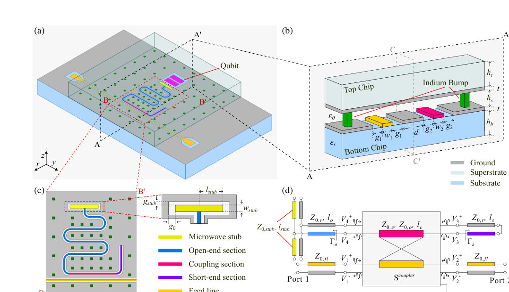
<figcaption class="paper-figure-caption"><b>Fig 1.</b> Fig. 1. (a) False-color isometric view of the 3D model, illustrating the feedline-coupled readout resonator system in a flip-chip configuration. The qubit and readout resonator are located on the bottom chip, while the top chip is fully metallized except for some apertures above the qubit. The top chip is intentionally diced to a smaller size than the bottom chip, allowing additional space for wire-bonding pads along the feedline. (b) Cross-sectional view of the coupling section with a false scale to illustrate the stack-up. (c) Top view of the physical layout of the resonator with the top chip unveiled. The resonator is divided into four sections: short-end section (purple), coupling...</figcaption>
</figure>
<figure class="paper-figure-card">
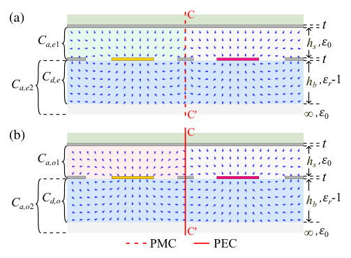
<figcaption class="paper-figure-caption"><b>Fig 2.</b> Fig. 2. E-field distributions for the configuration of top-grounded edge- coupled CPW line with a finite ground plane simulated using Ansys 2D Extractor and the configuration of partial capacitances for the even mode (a) and the odd mode (b).</figcaption>
</figure>
<figure class="paper-figure-card">

<figcaption class="paper-figure-caption"><b>Fig 3.</b> Fig. 3. Conformal mapping transformation steps to calculate the partial capacitance Ca,m1 for even mode (a)-(d) and odd mode (e)-(h). The solid lines represent PEC boundaries and the dash lines represent PMC boundaries.</figcaption>
</figure>
<figure class="paper-figure-card">

<figcaption class="paper-figure-caption"><b>Fig 4.</b> Fig. 4. Partial capacitances and cross-sectional view of the coupling section for planar architecture (a) and flip-chip architecture with back conductor on bottom chip (b). The plane of symmetry is designated by dash-dot line.</figcaption>
</figure>
<figure class="paper-figure-card">
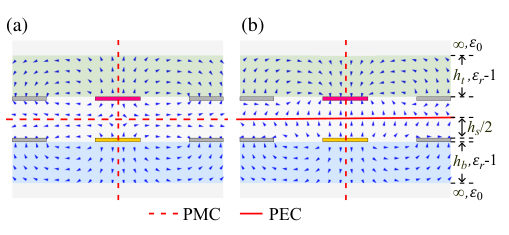
<figcaption class="paper-figure-caption"><b>Fig 5.</b> Fig. 5. Cross-sectional view of the coupling section for a broadside-coupled CPW line and the field distribution for even mode (a) and odd mode (b).</figcaption>
</figure>
</div>

<p><strong>Summary.</strong> This paper introduces an advanced analytical model to accurately characterize superconducting resonators used for qubit readout. By integrating four-port network analysis and conformal mapping, it provides closed-form expressions for resonance frequency and coupling Q-factor. The model is validated against both high-fidelity FEM simulations and physical measurements, offering a crucial tool for designing scalable quantum hardware.</p>
<p><strong>Why it may be interesting.</strong> This work directly addresses the hardware characterization bottleneck in superconducting quantum computing by providing a computationally fast alternative to intensive full-wave electromagnetic simulations for critical readout components.</p>
<details>
<summary>Detailed structure</summary>
<p><strong>Main problem.</strong> The core problem is developing a fast, accurate analytical model to determine the resonance frequencies ($f_r$) and coupling Q-factors ($Q_c$) of feedline-coupled resonators used in superconducting qubit readout circuits.</p>
<p><strong>Main result.</strong> The proposed analytical model successfully predicts $f_r$ and $Q_c$ with good agreement ($\Delta f/f_{sim} < 1\%$, $\Delta Q_c/Q_{c,sim} < 20\%$) when compared against both full-wave FEM simulations and direct cryogenic measurements.</p>
<p><strong>Method.</strong> The methodology involves using four-port microwave network analysis combined with conformal mapping techniques to derive closed-form expressions for the transmission coefficient ($S_{21}$).</p>
<p><strong>Model / system.</strong> The system is a superconducting $\lambda/4$ resonator coupled to a CPW feedline, often implemented in complex 3D heterogeneous architectures. The model treats the coupling section as a four-port network reduced to two ports.</p>
<p><strong>Key observables.</strong> Resonance frequency ($f_r$), coupling quality factor ($Q_c$), and the transmission spectrum $|S_{21}(f)|$.</p>
<p><strong>Important parameters / regimes.</strong> Geometric parameters such as conductor thickness ($t$), gap spacing ($h_s$), and resonator lengths ($l_s, l_o$).</p>
<p><strong>Assumptions / limitations.</strong> Key assumptions include treating the superconductor thickness as zero in some derivations, simplifying transitions to right-angles, and using an impedance matrix approach.</p>
<p><strong>Figures summary.</strong> Figures illustrate physical layouts of 3D flip-chip resonators, E-field distributions for even/odd modes, and conformal mapping steps used for capacitance calculation.</p>
<p><strong>Paper structure.</strong> The paper progresses from defining the need for a fast model to detailing the mathematical framework (four-port analysis, impedance matrix derivation via conformal mapping) before validating the final closed-form $S_{21}$ expression against both simulation results and experimental measurements on fabricated chips.</p>
</details>
<details>
<summary>Abstract</summary>
<p>Superconducting quantum chips commonly utilize quarter-wavelength (λ/4) transmission line resonators as readout circuits. An analytical model for the accurate determination of resonance frequencies and coupling Q-factors of feedline-coupled superconducting resonators is introduced. The model leverages four-port microwave network analysis, integrating boundary conditions and conformal mapping techniques to compute even- and odd-mode impedances in edge-coupled coplanar waveguide (CPW) structures. Its versatility allows application to both planar and 3-D heterogeneous architectures, making it a powerful tool for resonator design. To validate the model, a test chip with λ/4 resonators of varying geometries is fabricated and measured in a cryogenic environment. Comparisons with finite element method (FEM) simulations and experimental measurements confirm the model's accuracy, with resonance frequencies and coupling Q-factors aligning closely across configurations. This proposed model facilitates the design of superconducting resonators in readout circuits for more effective, scalable, and adaptable quantum computing architectures.</p>
</details>
<p><sub><a href="#top">↑ back to top</a></sub></p>

<p><a id="paper-2607.01180"></a></p>
<h3 id="non-clifford-benchmarking-via-ensemble-feature-selection"><a href="http://arxiv.org/abs/2607.01180v1">Non-Clifford Benchmarking via Ensemble Feature Selection</a></h3>
<p><strong>Authors:</strong> Stancho G. Stanchev, Nikolay V. Vitanov<br>
<strong>Type:</strong> experiment · <strong>Category:</strong> quantum information and computing · <strong>PDF:</strong> <a href="https://arxiv.org/pdf/2607.01180v1">https://arxiv.org/pdf/2607.01180v1</a><br>
<strong>Analysis basis:</strong> full PDF text, analyzed in chunks
<strong>Topic relevance:</strong> 🔥 <code>QC/QI experiment</code> <strong>4/5</strong> · <code>quantum measurements</code> <strong>1/5</strong></p>
<div class="figure-strip-hint">↔ Scroll figures horizontally</div>
<div class="paper-figures-scroll">
<figure class="paper-figure-card">
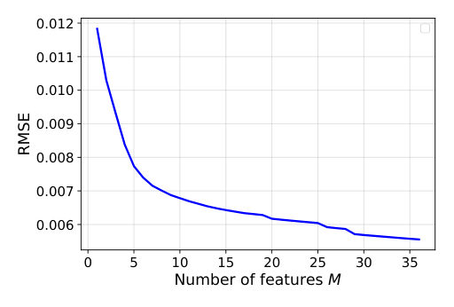
<figcaption class="paper-figure-caption"><b>Fig 1.</b> FIG. 2: Combined RMSE as a function of the number of selected features M for L ∈4, 8. The training ensemble contains noisy realizations of I, CZ(0, 2) and CCZ gener- ated with different random seeds. Consequently, a single EFS estimator is learned simultaneously for all three tar- gets, resulting in the same RMSE curve.</figcaption>
</figure>
<figure class="paper-figure-card">
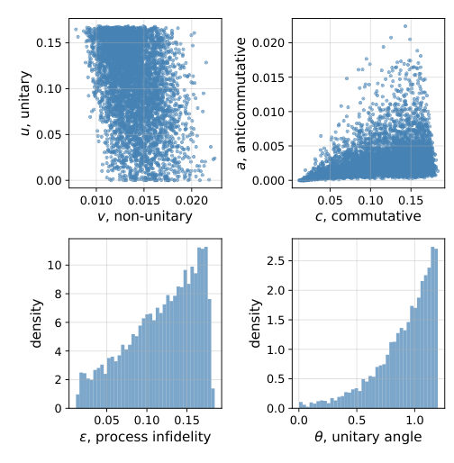
<figcaption class="paper-figure-caption"><b>Fig 2.</b> FIG. 1: Error decomposition of the training ensemble (K = 5000 realizations). Top left: (u, v) scatter separat- ing coherent (u) and incoherent (v) contributions. Top right: (a, c) scatter separating anticommuting (a) and commuting (c) parts relative to the involutory target. Bottom left: distribution of the sampled infidelity ε, bi- ased toward larger errors to improve training coverage. Bottom right: distribution of the coherent error angle θ.</figcaption>
</figure>
<figure class="paper-figure-card">
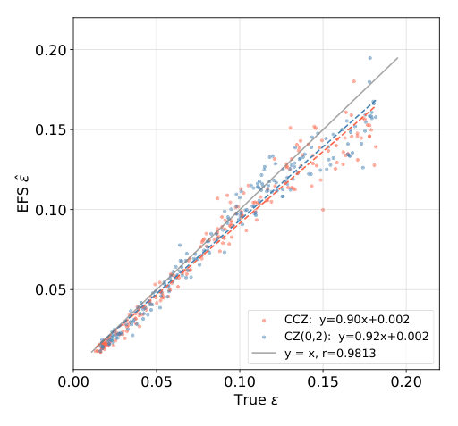
<figcaption class="paper-figure-caption"><b>Fig 3.</b> FIG. 3: EFS estimates vs true process infidelity for CCZ (red) and CZ(0, 2) (blue) from Aer Simulator with inde- pendent test ensemble and SPAM/readout errors. Both targets yield slope ≈0.9–0.92, confirming that the esti- mator is equally applicable to non-Clifford gates.</figcaption>
</figure>
<figure class="paper-figure-card">
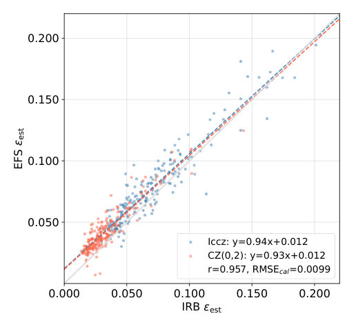
<figcaption class="paper-figure-caption"><b>Fig 4.</b> FIG. 4: EFS vs IRB for ICCZ and CZ(0, 2) on ibm_kingston with M = 24. Fitted slopes and inter- cepts are very similar for the two targets (α = 0.94 and α = 0.93, both with intercept 0.012); combined r = 0.957, RMSEcal = 0.0099, over ε ≈0.02–0.20.</figcaption>
</figure>
<figure class="paper-figure-card">
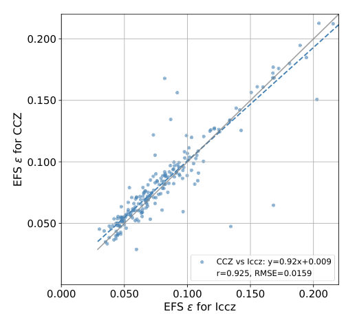
<figcaption class="paper-figure-caption"><b>Fig 5.</b> FIG. 5: EFS estimates for CCZ versus ICCZ on ibm_kingston across all valid qubit triples (α = 0.92, r = 0.925, RMSE = 0.0159). The close agreement for the large majority of triples confirms the expected domi- nance of diagonal noise; the few outliers (≈3–4%) reveal measurable non-diagonal error structure made detectable by the Rz(±π/4) redistribution.</figcaption>
</figure>
</div>

<p><strong>Summary.</strong> The authors introduce Ensemble Feature Selection (EFS), a novel technique to estimate process infidelity for difficult non-Clifford quantum gates. By training on an ensemble of simulated noisy channels and using ridge regression, EFS constructs a robust linear estimator. Validation on superconducting hardware confirms that EFS provides accurate measurements comparable to established methods like IRB.</p>
<p><strong>Why it may be interesting.</strong> This work provides a crucial tool for characterizing noise in complex quantum hardware beyond simple gate sets, which is vital for scaling up quantum computation by providing reliable benchmarking metrics.</p>
<details>
<summary>Detailed structure</summary>
<p><strong>Main problem.</strong> The primary challenge is developing a reliable method to estimate process infidelity for multi-qubit gates, especially non-Clifford targets, where standard Clifford-based benchmarking techniques fail.</p>
<p><strong>Main result.</strong> The proposed Ensemble Feature Selection (EFS) method shows strong agreement with independent Randomized Benchmarking measurements on superconducting hardware, achieving high estimation precision across a wide range of gate infidelities.</p>
<p><strong>Method.</strong> EFS selects a compact set of executable circuit measurements from a candidate pool using offline training on a physically motivated ensemble of noisy channels and combines them into a linear estimator via ridge regression.</p>
<p><strong>Model / system.</strong> The work is validated on superconducting hardware (ibm_kingston) using three-qubit non-Clifford gates like CCZ. The analysis relies on Pauli Transfer Matrices to define process fidelity and infidelity ($\epsilon$).</p>
<p><strong>Key observables.</strong> Process infidelity ($\epsilon$), gate fidelity ($F(G, T)$), and comparison metrics against independent Interleaved Randomized Benchmarking (IRB).</p>
<p><strong>Important parameters / regimes.</strong> Estimation precision of $\approx 0.01$ over an infidelity range of $0.02-0.2$. The optimal feature set size was determined to be around $M=24$.</p>
<p><strong>Assumptions / limitations.</strong> The method assumes the existence of a physically motivated training ensemble incorporating prior knowledge about dominant hardware noise mechanisms, and that the target gate satisfies an anchor condition.</p>
<p><strong>Figures summary.</strong> Figures compare EFS estimates against true process infidelity from independent IRB measurements for Clifford benchmarks (ICCZ, CZ(0, 2)), demonstrating strong linear correlation. Further comparisons test transferability to non-Clifford gates like CCZ.</p>
<p><strong>Paper structure.</strong> The paper develops the theoretical framework using Pauli Transfer Matrices and an anchor condition, details the EFS methodology involving ensemble training and ridge regression, validates the estimator against independent IRB measurements on Clifford targets, and finally applies it directly to estimate infidelity for non-Clifford gates like CCZ.</p>
</details>
<details>
<summary>Abstract</summary>
<p>We propose an Ensemble Feature Selection (EFS) method for fast estimation of process infidelity of involutory multi-qubit gates, including non-Clifford targets, for which standard Clifford-based benchmarking does not apply. The method selects a compact set of experimentally executable circuit measurements from a candidate pool through offline training on a physically motivated ensemble of noisy channels, and combines them into a linear estimator with weights learned by ridge regression. The training ensemble is an explicit and tunable component of the protocol, incorporating prior knowledge about dominant hardware noise mechanisms. The estimator is validated on ibm_kingston using two Clifford validation benchmarks structurally related to the transpiled CCZ circuit, against independent Interleaved Randomized Benchmarking (IRB). Both show close EFS-IRB agreement across a wide range of process infidelities, with an estimation precision of approximately 0.01 over a process infidelity range of 0.02-0.2. EFS is subsequently applied directly to CCZ on the same device.</p>
</details>
<p><sub><a href="#top">↑ back to top</a></sub></p>

<p><a id="paper-2607.00172"></a></p>
<h3 id="superconducting-spiral-inductors-for-rf-reflectometry-operation-at-elevated-temperatures-and-magnetic-fields"><a href="http://arxiv.org/abs/2607.00172v1">Superconducting Spiral Inductors for RF Reflectometry: Operation at Elevated Temperatures and Magnetic Fields</a></h3>
<p><strong>Authors:</strong> Euan Parry, Murat Cubukcu, Patrick Reuvekamp, Manoj Stanley, Jonathan D. Fletcher, Alessandro Rossi<br>
<strong>Type:</strong> experiment · <strong>Category:</strong> quantum information and computing · <strong>PDF:</strong> <a href="https://arxiv.org/pdf/2607.00172v1">https://arxiv.org/pdf/2607.00172v1</a><br>
<strong>Analysis basis:</strong> full PDF text, analyzed in chunks
<strong>Topic relevance:</strong> 🔥 <code>QC/QI experiment</code> <strong>4/5</strong></p>
<div class="figure-strip-hint">↔ Scroll figures horizontally</div>
<div class="paper-figures-scroll">
<figure class="paper-figure-card">
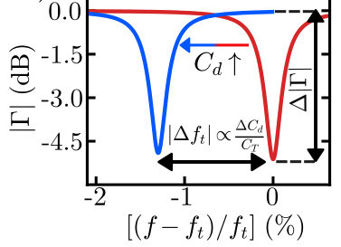
<figcaption class="paper-figure-caption"><b>Fig 1.</b> Figure 1. Parallel configuration tank circuit for gate-based reflectometry. (a) Equivalent circuit showing the supercon- ducting spiral and its sub-components (red) placed in parallel to a variable capacitor (Cd) representing a quantum device. (b) Simulated reflection coefficient amplitude as a function of fractional resonant frequency shift. The traces illustrate a transition from low (red) to high (blue) device capacitance. The phase response is omitted for simplicity.</figcaption>
</figure>
<figure class="paper-figure-card">
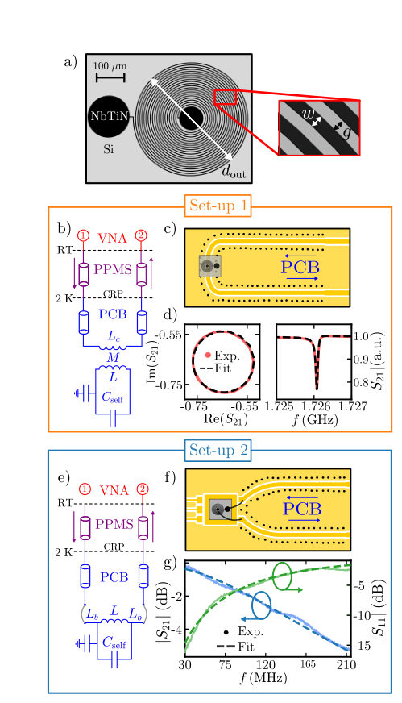
<figcaption class="paper-figure-caption"><b>Fig 2.</b> Figure 2. Device geometry and microwave characterisation methods. (a) Schematic illustration of an individual spiral de- vice and relevant geometric features. Inset: zoom-in showing track width and separation. (b) Equivalent circuit diagram for measurements carried out with set-up 1. The tempera- ture gradient from room temperature (red) to cryogenic base temperature (blue) is shown. Dashed line labelled CRP indi- cates the reference plane of UOSM calibrations. (c) Schematic representation of a spiral chip placed above a CPW for the inductively coupled notch measurements enabled by set-up 1. (d) Experimental S21 notch response as a function of fre- quency for device D3 at 2 K (red dot) and...</figcaption>
</figure>
<figure class="paper-figure-card">
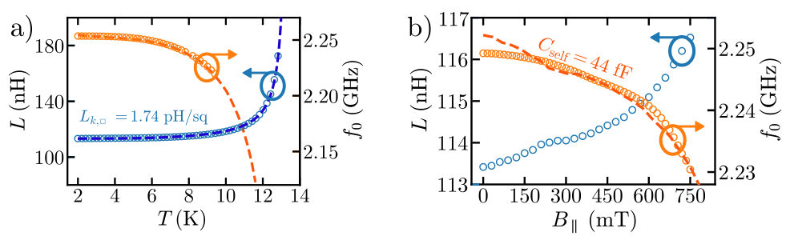
<figcaption class="paper-figure-caption"><b>Fig 3.</b> Figure 3. (a) L(T) extracted from the bonded two-port measurements of D2 carried out in set-up 2 (blue circles) and f0(T) extracted from the inductively coupled notch measurements of a nominally identical D2 device carried out in set-up 1 (orange circles). The blue dashed line is the fit discussed in Section III and gives Lg = 106 nH, within 3% of the designed value, and Lk,□= 1.74 pH/sq. The orange dashed line shows the f0(T) calculated using Eq. 2 with the extracted inductance and a constant Cself = 44 fF. (b) Extracted L(B∥) (blue circles) and f0(B∥) (orange circles) for the same design. B∥is the magnetic field oriented nominally within the plane of the superconducting film. Using the...</figcaption>
</figure>
<figure class="paper-figure-card">

<figcaption class="paper-figure-caption"><b>Fig 4.</b> Figure 3(a) shows the temperature dependence of D2 inductance, L, and resonance frequency, f0, as extracted from our two separate measurement approaches.These measurements were performed on different physical de-</figcaption>
</figure>
<figure class="paper-figure-card">
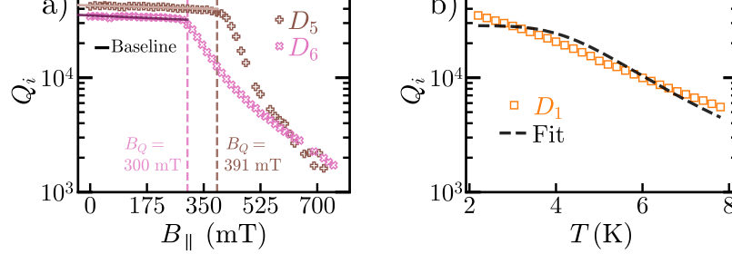
<figcaption class="paper-figure-caption"><b>Fig 5.</b> Figure 4. Temperature- and field-dependent quality factor degradation. (a) Qi as a function of applied parallel magnetic field for devices D5 and D6 at T = 2 K. The field values BQ = 391 mT for D5 and BQ = 300 mT for D6 for which a gradual degradation of more than 10% manifests are highlighted by dashed vertical lines. (b) Temperature dependence of Qi for device D1 in the absence of an applied field (squares). The dashed curve represents a fit to the quasiparticle-loss model of Eq. 5.</figcaption>
</figure>
</div>

<p><strong>Summary.</strong> This paper presents a comprehensive experimental characterization of superconducting spiral inductors designed for RF reflectometry in quantum computing. By using dual measurement techniques, the authors successfully separated inductive and capacitive effects to map out how device performance degrades with increasing temperature or magnetic field. The results provide crucial design rules for building robust readout circuitry for next-generation quantum processors.</p>
<p><strong>Why it may be interesting.</strong> This work directly impacts the hardware layer of quantum computing by providing quantitative guidelines for designing superconducting readout circuits that must maintain performance stability under non-ideal operating conditions (T &gt; 1K, B $
eq$ 0).</p>
<details>
<summary>Detailed structure</summary>
<p><strong>Main problem.</strong> The study addresses the need for reliable superconducting circuit components, specifically spiral inductors, to function correctly in future quantum computing architectures that operate at elevated temperatures and magnetic fields.</p>
<p><strong>Main result.</strong> The research successfully characterized the temperature and magnetic field dependence of inductor performance, establishing design metrics that show frequency shifts are dominated by inductive effects, while loss is limited by quasiparticle dissipation or vortex entry.</p>
<p><strong>Method.</strong> The authors employed two complementary microwave measurement setups—weakly coupled resonator measurements and independent two-port inductance extraction—to systematically deconvolve the device's electrical response.</p>
<p><strong>Model / system.</strong> The physical system is a superconducting spiral inductor made of NbTiN film, which acts as a distributed resonator. The analysis models its behavior using lumped admittance fitting techniques to separate geometric ($L_g$) and temperature/field-dependent kinetic inductance ($L_k$).</p>
<p><strong>Key observables.</strong> Resonant frequency ($f_0$), internal quality factor ($Q_i$), total inductance ($L$), and the field-dependent loss onset field ($B_Q$).</p>
<p><strong>Important parameters / regimes.</strong> Operating temperatures (several Kelvin), magnetic fields approaching 1 T, kinetic inductance fraction ($\alpha$), and superconducting gap temperature dependence $\Delta(T)$.</p>
<p><strong>Assumptions / limitations.</strong> The primary assumption is that combining two independent measurement techniques allows for the accurate separation of inductive and capacitive contributions to characterize the true device response.</p>
<p><strong>Figures summary.</strong> Figures illustrate the comparison between frequency shifts derived from two different measurement setups, show $Q_i$ degradation versus applied magnetic field (highlighting $B_Q$), and plot design trade-offs relating miniaturization ($\alpha$) to stability.</p>
<p><strong>Paper structure.</strong> The paper systematically presents measurements using two distinct microwave characterization setups. It then analyzes the temperature and magnetic field dependence of resonance shifts, confirming inductive dominance, before concluding with a discussion on engineering trade-offs between device size and operational robustness.</p>
</details>
<details>
<summary>Abstract</summary>
<p>Superconducting spiral inductors are emerging as key components for radio-frequency (RF) reflectometry, a widely used readout technique for semiconductor spin qubits. Future scalable quantum-computing architectures are expected to operate at elevated temperatures and magnetic fields, placing new demands on the performance and stability of superconducting circuit elements. Here, we present a systematic study of NbTiN spiral inductors under temperatures of several kelvin and magnetic fields approaching 1 T. By combining weakly coupled resonator measurements with independent two-port inductance extraction, we separate inductive and capacitive contributions to device behaviour and directly identify the origin of resonance shifts and quality factor degradation. Furthermore, we establish practical design metrics linking geometry, temperature sensitivity, and magnetic-field robustness. These results provide a general framework for benchmarking superconducting inductors and guiding the design of future RF-reflectometry circuits for practical quantum technologies.</p>
</details>
<p><sub><a href="#top">↑ back to top</a></sub></p>

<p><a id="paper-2607.00262"></a></p>
<h3 id="demographic-senescence-as-multi-level-selection-in-miniature"><a href="http://arxiv.org/abs/2607.00262v1">Demographic senescence as multi-level selection in miniature</a></h3>
<p><strong>Authors:</strong> Ananda Shikhara Bhat, Hanna Kokko<br>
<strong>Type:</strong> theory · <strong>Category:</strong> statistical mechanics · <strong>PDF:</strong> <a href="https://arxiv.org/pdf/2607.00262v1">https://arxiv.org/pdf/2607.00262v1</a><br>
<strong>Analysis basis:</strong> full PDF text, analyzed in chunks
<strong>Topic relevance:</strong> <code>Keldysh / 2PI / non-Gaussian methods</code> <strong>3/5</strong> · <code>methods for driven-dissipative</code> <strong>3/5</strong> · <code>non-equilibrium dynamics</code> <strong>3/5</strong> · <code>analog quantum simulation</code> <strong>2/5</strong> · <code>correlated / nonlocal dissipation</code> <strong>2/5</strong> · <code>driven-dissipative phase transition</code> <strong>2/5</strong> · <code>non-equilibrium universality</code> <strong>2/5</strong> · <code>Kondo &amp; dissipative impurity</code> <strong>1/5</strong> · <code>entanglement &amp; information structure</code> <strong>1/5</strong> · <code>scars &amp; prethermalization</code> <strong>1/5</strong></p>
<div class="figure-strip-hint">↔ Scroll figures horizontally</div>
<div class="paper-figures-scroll">
<figure class="paper-figure-card">
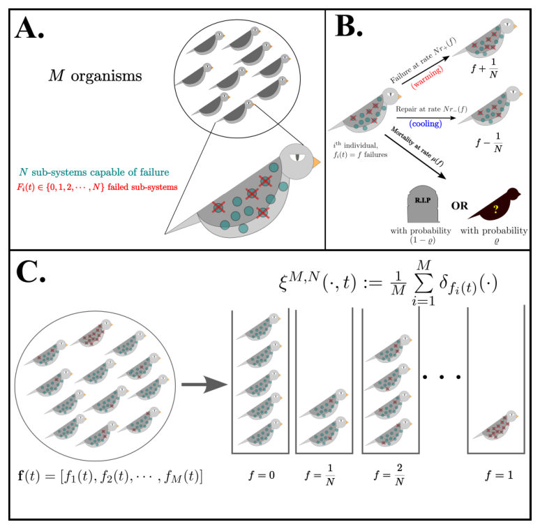
<figcaption class="paper-figure-caption"><b>Fig 1.</b> Figure 1: A description of the stochastic process considered in this paper in the senescence setting, where systems are organisms, sub-systems are intra-organismal sub-systems, red sub-systems are failed sub-systems, warming is failure of functioning sub-systems, and cooling is repair of failed sub-systems. (A) The model consists of M organisms, each of which have N intra-organismal sub-systems capable of failure. (B) An organism with f ∈{0, 1</figcaption>
</figure>
</div>

<p><strong>Summary.</strong> This work establishes a deep formal equivalence between biological senescence and multi-level selection theory. By developing sophisticated mathematical tools, the authors show that age-related deterioration can be modeled as a stochastic process governed by competition at two interacting levels: sub-systems within an individual, and individuals competing against each other. This provides a powerful unifying framework for understanding aging dynamics.</p>
<p><strong>Why it may be interesting.</strong> While not directly about quantum systems, the rigorous mathematical machinery developed—using SPDEs and functional central limit theorems to model complex interacting stochastic processes—is highly relevant for modeling open quantum systems or many-body dynamics where noise and collective behavior are key.</p>
<details>
<summary>Detailed structure</summary>
<p><strong>Main problem.</strong> To formally demonstrate that demographic senescence (age-related mortality increase) can be mathematically understood as an emergent consequence of multi-level selection processes.</p>
<p><strong>Main result.</strong> The progressive aging pattern is shown to be formally equivalent to the patterns generated by a within-generation, two-level stochastic process modeling competition between sub-systems and groups.</p>
<p><strong>Method.</strong> The authors employ advanced stochastic calculus, deriving functional Master Equations and their subsequent diffusion approximations (Fokker-Planck equations) in multiple scaling limits.</p>
<p><strong>Model / system.</strong> The model tracks the state of $M$ 'systems' (organisms), where each system contains $N$ interacting sub-systems. Dynamics involve within-system failure/repair ('warming/cooling') and between-system selection/extinction, modeled via a ball-and-urn scheme.</p>
<p><strong>Key observables.</strong> The proportion of systems $\xi_{M,N}(f, t)$ possessing a certain fraction $f$ of failed sub-systems; the scaled mean mortality rate $b_\mu(t)$.</p>
<p><strong>Important parameters / regimes.</strong> Replacement probability ($\varrho$), system size ($M$), sub-system count ($N$), and failure/repair rates ($r_+, r_-$).</p>
<p><strong>Assumptions / limitations.</strong> The analysis relies heavily on diffusion approximations (Gaussian limits) for both the number of systems ($M$) and the continuous trait space ($N 	o \infty$).</p>
<p><strong>Figures summary.</strong> Figure 1 illustrates the model components: (A) $M$ organisms, each with $N$ sub-systems; (B) Dynamics involving failure accumulation, repair, and death; (C) Representation using a ball-and-urn scheme.</p>
<p><strong>Paper structure.</strong> The paper builds from defining the stochastic process via Master Equations for finite $M$ and $N$, deriving functional Fokker-Planck equations through diffusion approximations, and finally analyzing specific scaling limits to recover known models of senescence and selection.</p>
</details>
<details>
<summary>Abstract</summary>
<p>Multi-level selection and senescence do not at first sight have much in common. Here, we demonstrate that the emergent mortality patterns generated by demographic senescence can be understood as the product of multi-level selection. We formulate a two-level Moran type process and use its scaling limits to illustrate that a simple mathematical framework that models multi-level selection in group-structured populations also models damage accumulation patterns and resultant mortality curves in ageing organisms. To verbally make the connection, observe that defectors spread within a group consisting of cooperators and defectors; when groups compete against each other, defector-rich groups suffer, and between-group selection causes such groups to be systematically under-represented. Exactly analogously, senescing individuals accumulate damage to physiological sub-systems, and `damage begets damage'; individuals who are more damaged are more likely to die, hence damage-rich individuals are systematically under-represented in later age classes. Thus, emergent senescence patterns in complex, integrated organisms are formally equivalent to the patterns generated by a within-generation multi-level selection process in which intra-organismal sub-systems play the role of particles, organisms play the role of collectives, and selective disappearance plays the role of group selection.</p>
</details>
<p><sub><a href="#top">↑ back to top</a></sub></p>

<p><a id="paper-2607.01035"></a></p>
<h3 id="susceptibility-kinetic-uncertainty-relations-for-quantum-systems"><a href="http://arxiv.org/abs/2607.01035v1">Susceptibility-kinetic uncertainty relations for quantum systems</a></h3>
<p><strong>Authors:</strong> Didrik Palmqvist, Ludovico Tesser, Janine Splettstoesser<br>
<strong>Type:</strong> theory · <strong>Category:</strong> statistical mechanics · <strong>PDF:</strong> <a href="https://arxiv.org/pdf/2607.01035v1">https://arxiv.org/pdf/2607.01035v1</a><br>
<strong>Analysis basis:</strong> full PDF text, analyzed in chunks
<strong>Topic relevance:</strong> <code>methods for driven-dissipative</code> <strong>3/5</strong> · <code>non-equilibrium dynamics</code> <strong>3/5</strong> · <code>non-equilibrium universality</code> <strong>3/5</strong> · <code>Keldysh / 2PI / non-Gaussian methods</code> <strong>2/5</strong> · <code>driven-dissipative phase transition</code> <strong>2/5</strong> · <code>quantum measurements</code> <strong>2/5</strong> · <code>Kondo &amp; dissipative impurity</code> <strong>1/5</strong> · <code>analog quantum simulation</code> <strong>1/5</strong> · <code>correlated / nonlocal dissipation</code> <strong>1/5</strong> · <code>entanglement &amp; information structure</code> <strong>1/5</strong> · <code>measurement-induced transitions</code> <strong>1/5</strong></p>
<div class="figure-strip-hint">↔ Scroll figures horizontally</div>
<div class="paper-figures-scroll">
<figure class="paper-figure-card">
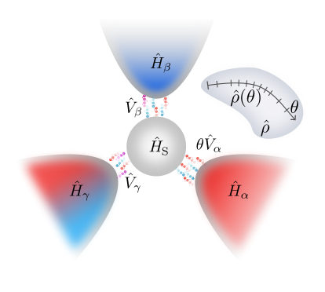
<figcaption class="paper-figure-caption"><b>Fig 1.</b> Figure 1. Quantum system S coupled to reservoirs (baths) via coupling ˆVα,β,..., enabling transport. The coupling strength to (one) reservoir is parameterized by θ, resulting in its en- coding in the state dynamics ˆρ(θ) that serves as a basis for generalizing the concept of dynamical activity to quantum systems. The color-shading of the baths symbolizes arbitrary out-of-equilibrium situations.</figcaption>
</figure>
<figure class="paper-figure-card">
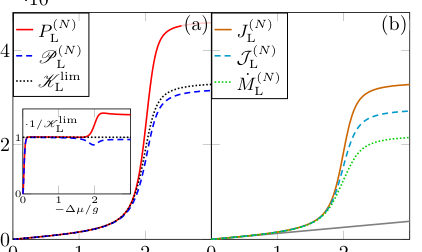
<figcaption class="paper-figure-caption"><b>Fig 2.</b> Figure 2. Classical local KUR [Eq. (35)] and S-KUR [Eq. (34)] for particle current in DQD as a function of chemical potential bias ∆µ. We set ΓR = 5ΓL = g/5, TL = TR = g/50kB and ϵd = 0. (a) Violation of local classical KUR and saturation of the S-KUR. (b) Particle current J(N) L , susceptibility ˙M (N) L and their average J (N) L . The close-to-equilibrium approximation ˙M (N) L ≈ ΓLΓR</figcaption>
</figure>
<figure class="paper-figure-card">
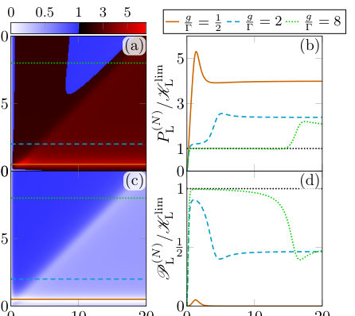
<figcaption class="paper-figure-caption"><b>Fig 3.</b> Figure 3. (a,b) Violation of classical local KUR [Eq. (35)] and (c,d) saturation of S-KUR [Eq. (34)] in DQD for varying tunneling strength g and chemical potential bias ∆µ. We set ΓL = ΓR = Γ, TL = TR = 0.1Γ/kB, and ϵd = 0.</figcaption>
</figure>
<figure class="paper-figure-card">

<figcaption class="paper-figure-caption"><b>Fig 4.</b> Figure 4. (a,b) Violation of classical local KUR [Eq. (35)] and (c,d) saturation of S-KUR [Eq. (34)] in DQD for varying coupling strength Γ = ΓL = ΓR and chemical potential bias ∆µ. We set TL = TR = 0.1g/kB, and ϵd = 0.</figcaption>
</figure>
<figure class="paper-figure-card">
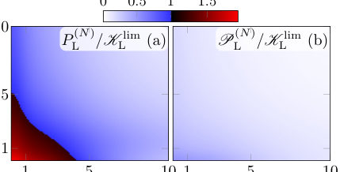
<figcaption class="paper-figure-caption"><b>Fig 5.</b> Figure 5. (a) Violation of classical local KUR [Eq. (35)] and (b) saturation of S-KUR [Eq. (34)] in DQD for varying temperatures TL, TR. We set ΓL = ΓR = Γ, g = 5Γ, ϵd = 2Γ, ∆µ = 10Γ.</figcaption>
</figure>
</div>

<p><strong>Summary.</strong> The paper introduces the Susceptibility-Kinetic Uncertainty Relation (S-KUR) as a universal bound governing current precision in open quantum systems. By defining Partial Dynamical Activity using quantum Fisher information, it overcomes limitations of previous bounds that failed under strong coupling or coherence. This tool is demonstrated to be robustly applicable to complex transport phenomena like those in double quantum dots.</p>
<p><strong>Why it may be interesting.</strong> This work provides a powerful, general theoretical tool for quantifying fundamental limits on measurement precision in non-equilibrium quantum transport, which is highly relevant to mesoscopic physics and quantum thermodynamics.</p>
<details>
<summary>Detailed structure</summary>
<p><strong>Main problem.</strong> The central problem is establishing universal uncertainty relations that constrain current precision for open quantum systems operating out of equilibrium.</p>
<p><strong>Main result.</strong> The authors derive the Susceptibility-Kinetic Uncertainty Relation (S-KUR), a general bound on current precision derived from partial dynamical activity, which remains valid even when standard kinetic uncertainty relations fail due to quantum coherence or strong coupling.</p>
<p><strong>Method.</strong> The relation is derived using the Quantum Cramér-Rao Bound applied to the response of an observable to changes in system-reservoir coupling strength ($ heta$), leading to the definition of Partial Dynamical Activity (PDA).</p>
<p><strong>Model / system.</strong> The analysis focuses on open quantum systems coupled to reservoirs, exemplified by transport through a Double Quantum Dot (DQD) structure. The dynamics are governed by time-dependent Hamiltonians and analyzed in the steady-state limit.</p>
<p><strong>Key observables.</strong> Current ($\hat{J}(\hat{X})$), Susceptibility term ($\dot{M}(\hat{X})$), Zero-frequency noise ($S(\hat{X})$), Partial Dynamical Activity ($A_V(t)$).</p>
<p><strong>Important parameters / regimes.</strong> Coupling strength ($    heta$), Bias voltage ($\Delta\mu$), Temperature ($T$), and the time evolution parameter $t$.</p>
<p><strong>Assumptions / limitations.</strong> The derivation relies on defining PDA via quantum Fisher information related to coupling rescaling, and in some analyses, approximations like the secular approximation or Markovian limits are used.</p>
<p><strong>Figures summary.</strong> Figures illustrate the failure of classical local KURs compared to the saturation of the S-KUR for particle current in a DQD across varying bias; another figure shows the disappearance of classical bound violations upon increasing temperature.</p>
<p><strong>Paper structure.</strong> The paper builds from defining the problem using the QCRB, introducing PDA via quantum Fisher information, deriving the universal S-KUR, and then validating this relation by applying it to complex physical examples like steady-state transport in a DQD under various bias and temperature conditions.</p>
</details>
<details>
<summary>Abstract</summary>
<p>Kinetic uncertainty relations bound current precision of stochastic processes by dynamical activity. The extension of these bounds to quantum systems has been impeded by coherence, strong system-reservoir coupling, and the subtlety of defining dynamical activity in the quantum regime. Here, we introduce a partial dynamical activity through the quantum Fisher information associated with the rescaling of the system-reservoir coupling and show that it bounds current precision via a universal susceptibility-kinetic uncertainty relation. The general validity of this relation for any open quantum system is guaranteed by the natural contribution of a susceptibility term, which is experimentally accessible by tuning the system-reservoir coupling strength. We show how the partial dynamical activity encompasses previous definitions of activity in the weak-coupling Markovian limit and that it provides an information-geometric interpretation of correlator-based activities. We illustrate the tight constraint on precision that our bound provides with the example of steady-state transport through a double quantum dot, where quantum effects invalidate previously developed kinetic uncertainty relations. We expect our bound to provide a powerful tool for optimizing precision in arbitrary quantum systems.</p>
</details>
<p><sub><a href="#top">↑ back to top</a></sub></p>

<p><a id="paper-2607.00624"></a></p>
<h3 id="heliciton-assisted-chirality-induced-spin-selectivity-from-helical-dirac-current"><a href="http://arxiv.org/abs/2607.00624v1">Heliciton-Assisted Chirality-Induced Spin Selectivity from Helical Dirac Current</a></h3>
<p><strong>Authors:</strong> Ju Gao, Fang Shen<br>
<strong>Type:</strong> theory · <strong>Category:</strong> other · <strong>PDF:</strong> <a href="https://arxiv.org/pdf/2607.00624v1">https://arxiv.org/pdf/2607.00624v1</a><br>
<strong>Analysis basis:</strong> full PDF text, analyzed in chunks
<strong>Topic relevance:</strong> <code>Keldysh / 2PI / non-Gaussian methods</code> <strong>3/5</strong> · <code>methods for driven-dissipative</code> <strong>3/5</strong> · <code>spintronics-quantum-optics interface</code> <strong>3/5</strong> · <code>correlated / nonlocal dissipation</code> <strong>2/5</strong> · <code>driven-dissipative phase transition</code> <strong>2/5</strong> · <code>non-equilibrium dynamics</code> <strong>2/5</strong> · <code>Kondo &amp; dissipative impurity</code> <strong>1/5</strong> · <code>analog quantum simulation</code> <strong>1/5</strong> · <code>exotic spin models in light-matter</code> <strong>1/5</strong> · <code>non-equilibrium universality</code> <strong>1/5</strong></p>
<div class="figure-strip-hint">↔ Scroll figures horizontally</div>
<div class="paper-figures-scroll">
<figure class="paper-figure-card">
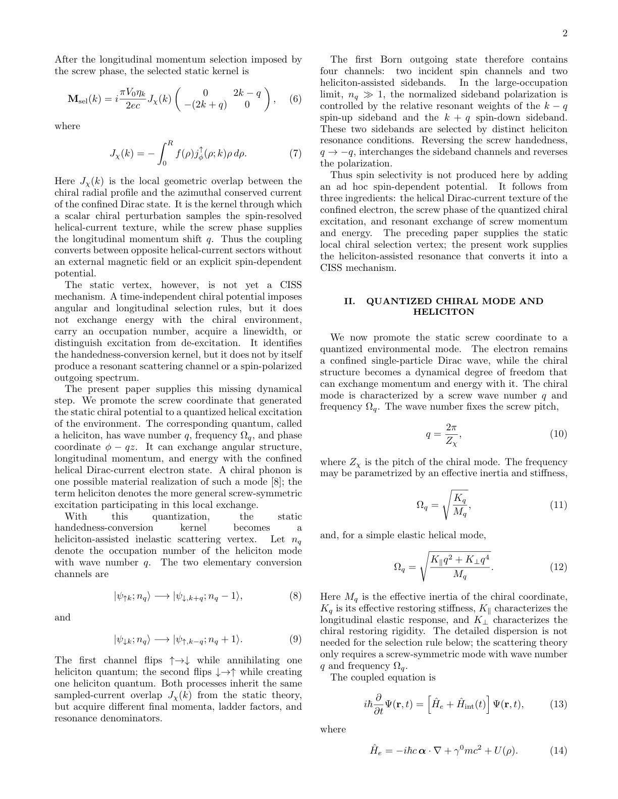
<figcaption class="paper-figure-caption"><b>Fig 1.</b> Low-resolution page preview, page 2</figcaption>
</figure>
<figure class="paper-figure-card">

<figcaption class="paper-figure-caption"><b>Fig 2.</b> Low-resolution page preview, page 3</figcaption>
</figure>
<figure class="paper-figure-card">

<figcaption class="paper-figure-caption"><b>Fig 3.</b> Low-resolution page preview, page 4</figcaption>
</figure>
<figure class="paper-figure-card">
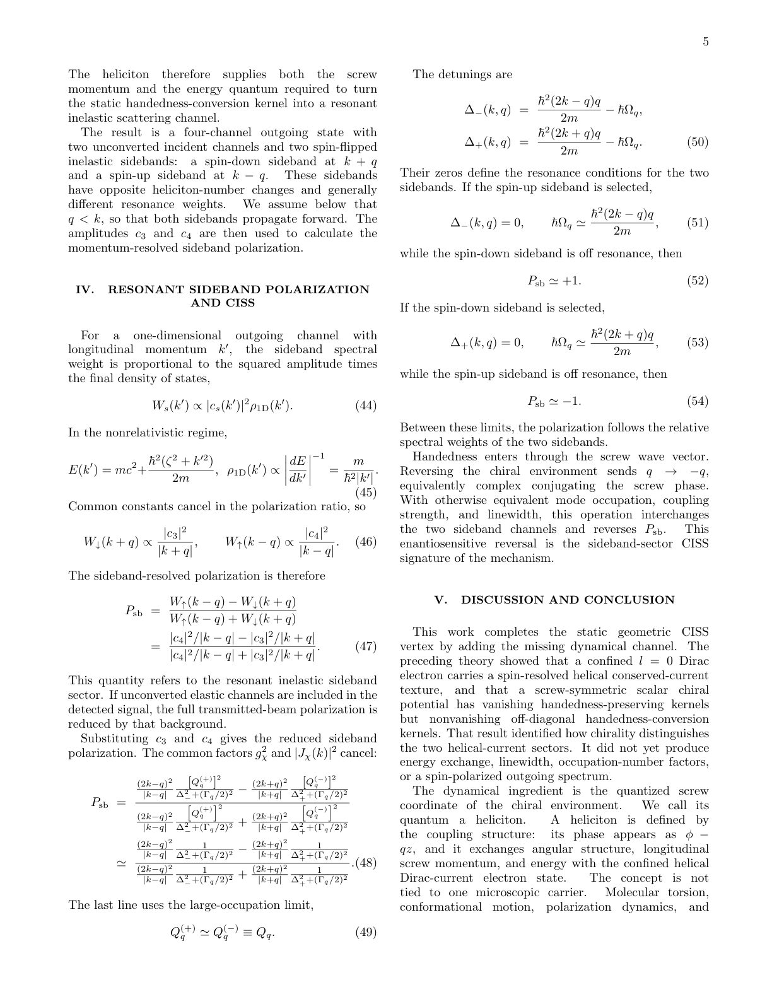
<figcaption class="paper-figure-caption"><b>Fig 4.</b> Low-resolution page preview, page 5</figcaption>
</figure>
<figure class="paper-figure-card">
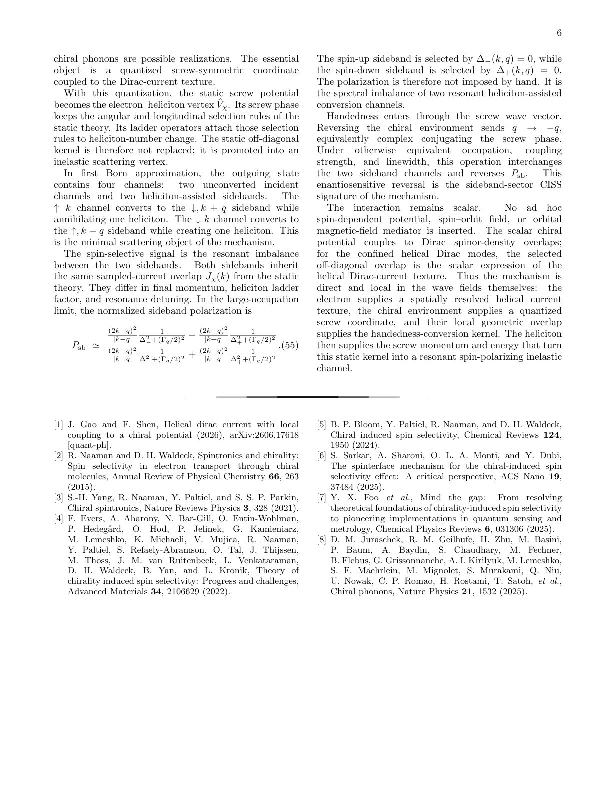
<figcaption class="paper-figure-caption"><b>Fig 5.</b> Low-resolution page preview, page 6</figcaption>
</figure>
</div>

<p><strong>Summary.</strong> This work proposes that Chirality-Induced Spin Selectivity (CISS) arises from an inelastic resonance process mediated by a quantized excitation called a heliciton. By treating the static chiral potential as a dynamic interaction, the authors show that spin polarization is achieved when the electron undergoes resonant energy and momentum exchange with this environmental quantum. This establishes CISS as a robust, dynamical mechanism rather than just a geometric effect.</p>
<p><strong>Why it may be interesting.</strong> It provides a concrete, dynamical mechanism for spin selectivity rooted in quantized environmental coupling, which is highly relevant to open quantum systems dynamics and spintronics theory.</p>
<details>
<summary>Detailed structure</summary>
<p><strong>Main problem.</strong> To develop a mechanism for Chirality-Induced Spin Selectivity (CISS) that incorporates energy exchange with the environment, moving beyond static chiral potentials.</p>
<p><strong>Main result.</strong> The paper shows that CISS can be understood as a heliciton-assisted resonant inelastic scattering process in the sideband sector, where full spin polarization is achieved at specific resonance conditions.</p>
<p><strong>Method.</strong> First Born scattering theory is used to analyze the coupling between an electron state and quantized environmental excitations (helicitons), leading to sidebands.</p>
<p><strong>Model / system.</strong> The model involves a confined Dirac electron interacting with a quantized, screw-symmetric environmental motion called a 'heliciton.' The interaction couples spin channels while conserving helicity via momentum ($\pm q$) and energy ($\hbar \Omega_q$) exchange.</p>
<p><strong>Key observables.</strong> Sideband polarization ($P_{sb}$), which reaches $\pm 1$ at resonance, and the resonant detuning conditions ($\Delta_{\pm}(k, q) = 0$).</p>
<p><strong>Important parameters / regimes.</strong> Helicon frequency ($\Omega_q$), wave number ($q$), and the local geometric overlap kernel $J_\chi(k)$ characterizing the helical Dirac-current texture.</p>
<p><strong>Assumptions / limitations.</strong> The calculation relies on treating the coupling perturbatively using first Born scattering theory, assuming sideband amplitudes are small.</p>
<p><strong>Paper structure.</strong> The paper develops the Hamiltonian incorporating the heliciton interaction, applies first Born scattering to analyze inelastic channels (absorption/emission), and derives the polarization conditions based on resonant energy/momentum matching.</p>
</details>
<details>
<summary>Abstract</summary>
<p>We develop a quantized chiral-field mechanism for chirality-induced spin selectivity (CISS). The corresponding quantum is a heliciton: a helical mode with phase coordinate $φ-qz$, screw momentum $\hbar q$, and energy $\hbarΩ_q$. A helical electron can absorb or emit this quantum, converting the static chiral vertex developed in our preceding work into an inelastic resonant scattering process. Using first Born scattering theory, we show that an incident two-spin-channel state generates two heliciton-assisted sidebands. Absorption converts the $\uparrow k$ channel into the $\downarrow,k+q$ sideband, while emission converts the $\downarrow k$ channel into the $\uparrow,k-q$ sideband. Thus the heliciton supplies both the screw momentum and energy needed to turn the handedness-conversion into a resonant spin-selective channel.   The two sidebands inherit the same sampled-current overlap $J_χ(k)$ from the static theory, but acquire different kinematic weights and different resonance detunings. The sideband sector reaches full spin polarization at the respective isolated heliciton resonances, with $P_{\rm sb}(k,q)\simeq +1$ for $Δ_-(k,q)=0$ and $P_{\rm sb}(k,q)\simeq -1$ for $Δ_+(k,q)=0$. Reversing the screw handedness, $q\rightarrow -q$, interchanges the two sideband channels and reverses the polarization. No ad hoc spin-dependent potential is introduced. The spin selectivity comes from three ingredients: helical Dirac-current texture, quantized screw-symmetric environmental motion, and resonant exchange of screw momentum and energy. This identifies CISS as a heliciton-assisted resonance mechanism that produces spin polarization in the inelastic sideband sector.</p>
</details>
<p><sub><a href="#top">↑ back to top</a></sub></p>

<p><a id="paper-2607.00718"></a></p>
<h3 id="conditional-enhancement-of-dissipation-induced-nonreciprocity-by-quantum-squeezing"><a href="http://arxiv.org/abs/2607.00718v1">Conditional Enhancement of Dissipation-Induced Nonreciprocity by Quantum Squeezing</a></h3>
<p><strong>Authors:</strong> B. -B. Liu, D. -Y. Wang, J. Tang, Gang Chen, H. Jing, Shi-Lei Su, F. Nori<br>
<strong>Type:</strong> theory · <strong>Category:</strong> other · <strong>PDF:</strong> <a href="https://arxiv.org/pdf/2607.00718v1">https://arxiv.org/pdf/2607.00718v1</a><br>
<strong>Analysis basis:</strong> full PDF text, analyzed in chunks
<strong>Topic relevance:</strong> <code>correlated / nonlocal dissipation</code> <strong>3/5</strong> · <code>driven-dissipative phase transition</code> <strong>3/5</strong> · <code>methods for driven-dissipative</code> <strong>3/5</strong> · <code>non-equilibrium dynamics</code> <strong>2/5</strong> · <code>non-equilibrium universality</code> <strong>2/5</strong> · <code>Keldysh / 2PI / non-Gaussian methods</code> <strong>1/5</strong> · <code>Tavis-Cummings &amp; cavity-many-emitter</code> <strong>1/5</strong> · <code>correlated cavity matter</code> <strong>1/5</strong></p>
<div class="figure-strip-hint">↔ Scroll figures horizontally</div>
<div class="paper-figures-scroll">
<figure class="paper-figure-card">

<figcaption class="paper-figure-caption"><b>Fig 1.</b> FIG. 1: (a) Schematic of the nonreciprocal coupling model. Cavity mode a is coherently coupled to cavity mode b with strength Jeiφ, and both cavity modes are dissipatively coupled into a common reservoir at a rate Γ. (b) A coherent drive applied to the nonlinear medium generates squeezing via degenerate parametric amplifi- cation (left), which conditionally enhances the effective nonreciprocal coupling between the cavities (right).</figcaption>
</figure>
<figure class="paper-figure-card">
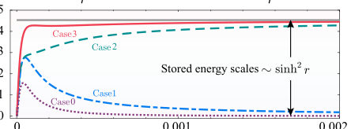
<figcaption class="paper-figure-caption"><b>Fig 2.</b> FIG. 2: (a) Evolution of the quantum battery energy for four configurations: case 0 [37] (dotted line), case 1 (dash-dotted line), case 2 (dashed line), and case 3 (solid line). (b) Average power P versus the scaled time Jt during the charging process. (c) Steady-state en- ergy enhancement factor Ei b(∞)/Eb versus the squeezing parameter r. (d) Ergotropy enhancement factor Ei b/Eb vs r in the steady state, where Eb = Eb for the case 0 with no squeezing. The symbols are the numerical results, and the curves are the analytical results. (e) Steady- state energy of the quantum battery as a function of coupling strength J. In the strong coupling regime, the stored energy scales as sinh2 r. The...</figcaption>
</figure>
<figure class="paper-figure-card">

<figcaption class="paper-figure-caption"><b>Fig 3.</b> FIG. 3: (a) Transmission coefficient Tab as a function of input signal frequency ω and squeezed-cavity frequency ωs, with squeezing parameter r = 1. (b) Tab vs ω, where ωs = 0. The parameters used are κa = κb = 8 × 10−5ωb, J = Jop, and Γ = 2J.</figcaption>
</figure>
</div>

<p><strong>Summary.</strong> This paper systematically explores the role of quantum squeezing in enhancing dissipation-induced nonreciprocal effects within coupled cavity systems. By analyzing both energy storage (quantum batteries) and signal isolation (optical isolators), the authors demonstrate that squeezing can exponentially boost key performance metrics. The findings establish a powerful theoretical framework for designing advanced, nonreciprocal quantum devices.</p>
<p><strong>Why it may be interesting.</strong> This work provides concrete, quantitative methods for engineering nonreciprocity using fundamental quantum resources like squeezing, which is highly relevant for designing next-generation quantum optical components.</p>
<details>
<summary>Detailed structure</summary>
<p><strong>Main problem.</strong> The study investigates how quantum squeezing can be utilized to enhance nonreciprocal coupling induced by dissipation in various quantum devices.</p>
<p><strong>Main result.</strong> Squeezing leads to an exponential enhancement of the effective nonreciprocal coupling, significantly boosting performance metrics like stored energy and output signal strength in both quantum batteries and optical isolators.</p>
<p><strong>Method.</strong> The analysis employs master equations and Quantum Langevin Equations (QLEs) to model the time evolution of system operators under nonlinear and dissipative couplings. Expectation values are calculated across multiple squeezing configurations.</p>
<p><strong>Model / system.</strong> The core model involves two coupled cavity modes interacting with a common reservoir, potentially incorporating $\chi^{(2)}$ nonlinearity. Applications include quantum batteries (energy storage) and optical isolators (unidirectional signal transmission).</p>
<p><strong>Key observables.</strong> Effective Coupling (EC), Enhancement Effect (EE), stored energy ($E_b$), ergotropy ($\mathcal{E}_b$), and the output transmission coefficient ($T_{ab}$).</p>
<p><strong>Important parameters / regimes.</strong> Squeezing parameter ($r$), coupling strength ($J$), detuning ($\omega_s$), and cavity decay rates ($\kappa, \Gamma$).</p>
<p><strong>Assumptions / limitations.</strong> The analysis assumes applying a broad-band squeezed-vacuum field to manage noise, and often simplifies dynamics by setting certain frequency parameters (e.g., $\omega_s = 0$ in some battery contexts).</p>
<p><strong>Figures summary.</strong> Figures illustrate the energy evolution of quantum batteries under different squeezing regimes, show the enhancement factor of stored energy vs. squeezing parameter $r$, and plot the transmission coefficient spectrum for optical isolators.</p>
<p><strong>Paper structure.</strong> The paper systematically investigates five cases of squeezing application in a coupled cavity system. It then applies this framework to analyze two key physical applications: quantum batteries (analyzing energy/ergotropy) and optical isolators (analyzing transmission coefficients).</p>
</details>
<details>
<summary>Abstract</summary>
<p>We systematically investigate the role of squeezing in improving dissipation-induced nonreciprocal coupling mediated by a common reservoir, by incorporating a $χ^{(2)}$ nonlinearity into either the cavity mode, the reservoir, or both. Squeezing is capable of exponentially enhancing the effective coupling, but this enhancement is not universal in such a nonreciprocal interaction. Instead, it depends on the system configuration and specific parameter regimes. Specifically, the squeezing of the reservoir injects additional energy into the system via the dissipation channel, modifying the underlying dynamics in a nontrivial manner. Furthermore, we demonstrate that the proposed approach enhances the performance of the quantum battery, including stored energy, charging power, and ergotropy. We provide the corresponding analytical expressions, together with a systematic analysis of energy transport and parameter optimization. Extending the framework to optical isolation, we observe an exponentially amplified output signal. Our results open a new avenue for nonreciprocal quantum information processing and nonreciprocal quantum device design.</p>
</details>
<p><sub><a href="#top">↑ back to top</a></sub></p>

<p><a id="paper-2607.00134"></a></p>
<h3 id="phase-distinction-of-gibbs-states-without-symmetry-breaking-topological-invariants-of-the-3d-toric-code"><a href="http://arxiv.org/abs/2607.00134v1">Phase distinction of Gibbs states without symmetry breaking: topological invariants of the 3D toric code</a></h3>
<p><strong>Authors:</strong> Haruki Watanabe<br>
<strong>Type:</strong> theory · <strong>Category:</strong> statistical mechanics · <strong>PDF:</strong> <a href="https://arxiv.org/pdf/2607.00134v1">https://arxiv.org/pdf/2607.00134v1</a><br>
<strong>Analysis basis:</strong> full PDF text, analyzed in chunks
<strong>Topic relevance:</strong> <code>analog quantum simulation</code> <strong>3/5</strong> · <code>entanglement &amp; information structure</code> <strong>3/5</strong> · <code>methods for driven-dissipative</code> <strong>3/5</strong> · <code>driven-dissipative phase transition</code> <strong>2/5</strong> · <code>Keldysh / 2PI / non-Gaussian methods</code> <strong>1/5</strong> · <code>correlated / nonlocal dissipation</code> <strong>1/5</strong> · <code>exotic spin models in light-matter</code> <strong>1/5</strong> · <code>non-equilibrium dynamics</code> <strong>1/5</strong> · <code>non-equilibrium universality</code> <strong>1/5</strong></p>
<div class="figure-strip-hint">↔ Scroll figures horizontally</div>
<div class="paper-figures-scroll">
<figure class="paper-figure-card">

<figcaption class="paper-figure-caption"><b>Fig 1.</b> FIG. 1. The three tiers of states and their phase-equivalence relations. Pure gapped ground states (bottom) are classified by finite-depth local unitaries—equivalently, quasi-adiabatic continuation along a path of local Hamiltonians with no gap closing [15, 16]. General mixed states (top) are classified by two-way quasi-local channels [17–19]. The intermediate Gibbs tier is classified by a path of local Hamiltonians with no ther- modynamic singularity.</figcaption>
</figure>
<figure class="paper-figure-card">

<figcaption class="paper-figure-caption"><b>Fig 2.</b> FIG. 2. The σz Wilson-loop two-point correlator ⟨¯ W1 ¯ W2⟩= ⟨Q</figcaption>
</figure>
<figure class="paper-figure-card">

<figcaption class="paper-figure-caption"><b>Fig 3.</b> FIG. 3. Electric (σz-basis) Fredenhagen–Marcu string order parameter ρFM on the three orthogonal cuts through (hx, hz, T) = (0.5, 0.1, 0.5) (512 seeds/point, per-seed median, L = 8–16): (a) T-scan (hx = 0.5, hz = 0.1), (b) hx-scan (hz = 0.1, T = 0.5), and (c) hz-scan (hx = 0.5, T = 0.5). Across the thermal transition at Tc ≃1.24 (a) and the magnetic transition at hx c ≃1 (b), ρFM stays flat (to ±0.02) at all sizes; it rises continuously from 0 to a positive constant only on the electric (hz) cut (c), with onset near the zero-temperature critical value hz c ≃0.194.</figcaption>
</figure>
<figure class="paper-figure-card">

<figcaption class="paper-figure-caption"><b>Fig 4.</b> FIG. 4. Bulk thermodynamic response on the three coordinate planes (L = 8, 64 seeds). Top row, the electric susceptibility χzz: (a) the (hx, T) plane at hz = 0, (b) the (hz, T) plane at hx = 0, and (c) the (hx, hz) plane at T = 0.2. Bottom row, the specific heat Cv on the same three planes: (d), (e), and (f), respectively. Lime lines mark the Reiss–Schmidt zero-temperature critical fields hx c = 1, hz c = 0.194 and the duality-derived T (0,0) c ≈1.3133.</figcaption>
</figure>
<figure class="paper-figure-card">

<figcaption class="paper-figure-caption"><b>Fig 5.</b> FIG. 5. Four-quadrant partition a, b, c, d of the annular Levin–Wen shell at L = 8, shown in (a) an xy slice (z ∈[3, 4]) and (b) an xz slice (y ∈[3, 4]); z is the shell’s symmetry axis and “cav.” marks the central cavity. The Levin–Wen regions A1, . . . , A4 are built from these quadrants (see text).</figcaption>
</figure>
</div>

<p><strong>Summary.</strong> This research tackles the challenge of identifying robust topological phase transitions at non-zero temperatures without relying on symmetry breaking. By introducing the decoded Wilson-loop correlation $f_W$, the authors provide a new, quasi-local-channel invariant diagnostic that successfully maps out the full phase diagram of the 3D toric code. This work advances our understanding of how topological order persists and manifests in realistic, thermal quantum systems.</p>
<p><strong>Why it may be interesting.</strong> The work provides advanced techniques for characterizing topological order in thermal equilibrium states, which is crucial for understanding quantum materials where finite temperature effects are dominant. The focus on channel-invariant diagnostics is highly relevant to open quantum systems theory.</p>
<details>
<summary>Detailed structure</summary>
<p><strong>Main problem.</strong> The central problem is establishing robust topological invariants that can distinguish between different phases of matter at non-zero temperature ($T>0$) without relying on the spontaneous breaking of any exact symmetry.</p>
<p><strong>Main result.</strong> The decoded Wilson-loop correlation $f_W$ was introduced as a quasi-local-channel invariant order parameter, which successfully distinguishes topological (value 1) from trivial (value 0) phases across finite temperatures and external fields.</p>
<p><strong>Method.</strong> The study employs theoretical analysis combined with large-scale Quantum Monte Carlo simulations to probe the thermal Gibbs state ($
ho_eta$) of the system.</p>
<p><strong>Model / system.</strong> The primary model is the three-dimensional ($   ext{3D}$) $\mathbb{Z}_2$ toric code, analyzed in its finite-temperature Gibbs state under generic magnetic fields where higher-form symmetries are explicitly broken or emergent.</p>
<p><strong>Key observables.</strong> Topological Entanglement Entropy ($\gamma$), Decoded Wilson-loop correlation ($f_W$), and various string/loop correlators (e.g., $\langle ar{W}_1 ar{W}_2 
angle$).</p>
<p><strong>Important parameters / regimes.</strong> Temperature ($T$), external magnetic fields $(h_x, h_z)$, and system size ($L$). The critical temperature $T_c$ is often compared to the 3D Ising model transition point.</p>
<p><strong>Assumptions / limitations.</strong> The rigorous definition of phase equivalence for Gibbs states at $T>0$ remains an active area of research; some results rely on quasi-local channel invariance arguments.</p>
<p><strong>Figures summary.</strong> Figures compare various diagnostics ($\gamma$, $
ho_{FM}$, correlators) across T-scans, $h_x$-scans, and $h_z$-scans, showing how different observables are sensitive to different types of phase transitions (thermal vs. magnetic vs. electric).</p>
<p><strong>Paper structure.</strong> The paper develops by first identifying the failure points of conventional diagnostics ($\gamma$ is not channel invariant), then introducing robust invariants like $f_W$, and finally applying these tools across the full $(h_x, h_z, T)$ phase diagram to demonstrate a universal diagnostic.</p>
</details>
<details>
<summary>Abstract</summary>
<p>We study the finite-temperature topological order of the three-dimensional $\mathbb{Z}_2$ toric code in a generic magnetic field, where every higher-form symmetry is explicitly broken and can at most be emergent. We show perturbatively, and confirm by large-scale quantum Monte Carlo, that the topological entanglement entropy stays quantized at $γ= \ln 2$ throughout the topological phase -- at finite temperature and under the symmetry-breaking field alike -- and collapses to $0$ across the thermal transition, a quantization protected geometrically by the Bianchi identity rather than by any exact symmetry of the system. The plateau $γ= \ln 2$ is, however, not invariant under quasi-local channels: a constant-depth channel can generate this identical quantized value from a trivial product state. We therefore introduce the decoded Wilson-loop correlation $f_W$, which quantizes to $1$ in the topological phase and $0$ in the trivial phase as $L\to\infty$ and, unlike $γ$, is a quasi-local-channel invariant -- a robust topological invariant of the mixed state.</p>
</details>
<p><sub><a href="#top">↑ back to top</a></sub></p>

<p><a id="paper-2607.00837"></a></p>
<h3 id="twisted-gaussian-schell-states-in-quantum-optics-twist-assisted-nonclassicality-and-entanglement"><a href="http://arxiv.org/abs/2607.00837v1">Twisted Gaussian Schell States in Quantum Optics: Twist-Assisted Nonclassicality and Entanglement</a></h3>
<p><strong>Authors:</strong> Fabricio Toscano, G. Cañas, A. Z. Khoury, P. H. Souto Ribeiro, S. P. Walborn<br>
<strong>Type:</strong> theory · <strong>Category:</strong> other · <strong>PDF:</strong> <a href="https://arxiv.org/pdf/2607.00837v1">https://arxiv.org/pdf/2607.00837v1</a><br>
<strong>Analysis basis:</strong> full PDF text, analyzed in chunks
<strong>Topic relevance:</strong> <code>entanglement &amp; information structure</code> <strong>3/5</strong> · <code>interference shaping light</code> <strong>3/5</strong> · <code>analog quantum simulation</code> <strong>2/5</strong> · <code>Keldysh / 2PI / non-Gaussian methods</code> <strong>1/5</strong> · <code>correlated / nonlocal dissipation</code> <strong>1/5</strong> · <code>driven-dissipative phase transition</code> <strong>1/5</strong> · <code>methods for driven-dissipative</code> <strong>1/5</strong> · <code>non-equilibrium dynamics</code> <strong>1/5</strong></p>
<div class="figure-strip-hint">↔ Scroll figures horizontally</div>
<div class="paper-figures-scroll">
<figure class="paper-figure-card">
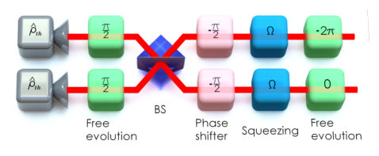
<figcaption class="paper-figure-caption"><b>Fig 1.</b> FIG. 1. Scheme to generate the TGS state from two indepen- dent thermal modes. From Eq. (8), the state is generated by the inverse transformation S−1 = O′−1S−1 d O−1 acting on the thermal input. See text for details.</figcaption>
</figure>
<figure class="paper-figure-card">

<figcaption class="paper-figure-caption"><b>Fig 2.</b> FIG. 2. Density plots of the mutual information in Eq. (38) for the joint photon distribution P(n1, n2) in Eq. (32), and marginals in (39), of a TGS state. See text for explanation.</figcaption>
</figure>
<figure class="paper-figure-card">

<figcaption class="paper-figure-caption"><b>Fig 3.</b> FIG. 4. Scheme to activate entanglement from the TGS state. The two-mode TGS state (modes 2 and 3) is mixed with two ancillary vacuum modes (modes 1 and 4) at balanced beam splitters. The output four-mode state Vf is separable in the 12|34 bipartition (since the beam splitters are local with re- spect to that cut) but can be entangled in the cross biparti- tions 14|23 and 13|24, depending on the values of κ, Ω, and v.</figcaption>
</figure>
<figure class="paper-figure-card">

<figcaption class="paper-figure-caption"><b>Fig 4.</b> FIG. 3. Joint photon number distribution P(n1, n2) of a TGS state at maximum correlations v = κ −1</figcaption>
</figure>
<figure class="paper-figure-card">
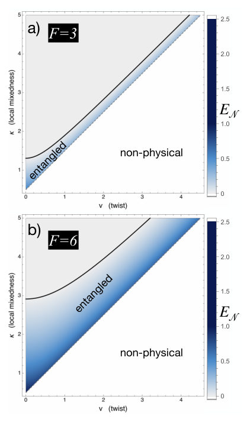
<figcaption class="paper-figure-caption"><b>Fig 5.</b> FIG. 5. Entangled regions of the (κ, v) plane of the 14|23 bipartition for a) F = 3 and b) F = 6. The dashed diagonal line is the physicality bound v = κ−1</figcaption>
</figure>
</div>

<p><strong>Summary.</strong> This paper rigorously analyzes the Twisted Gaussian Schell state, establishing it as a key system bridging classical optics and quantum information. It demonstrates that introducing a 'twist' parameter induces nonclassicality and entanglement even when the initial state is separable. The methodology uses advanced tools like Fock-basis probability calculations and logarithmic negativity to map out the resource landscape governed by this twist.</p>
<p><strong>Why it may be interesting.</strong> This work provides a detailed theoretical framework connecting classical beam engineering concepts (like the Schell model) directly to measurable quantum resources (squeezing and entanglement) in continuous variable systems.</p>
<details>
<summary>Detailed structure</summary>
<p><strong>Main problem.</strong> The paper introduces and analyzes the Twisted Gaussian Schell (TGS) state, a quantum-optical analog of classical beams, to study its nonclassicality and entanglement properties.</p>
<p><strong>Main result.</strong> The TGS state can be separable yet exhibit nonclassical features like sub-shot-noise squeezing and measurable entanglement when the twist parameter is non-zero. The twist parameter acts as a resource that activates or deepens quantum correlations.</p>
<p><strong>Method.</strong> Analysis involves calculating covariance matrices, deriving closed-form expressions for joint photon-number distributions in the Fock basis, and quantifying entanglement using logarithmic negativity across various bipartite splittings.</p>
<p><strong>Model / system.</strong> The system is the two-mode TGS state ($\hat{
ho}_{	ext{TGS}}$), a mixed Gaussian state generated via metaplectic evolution from an initial thermal state. The analysis extends to four-mode systems by coupling modes to ancillary vacuum fields.</p>
<p><strong>Key observables.</strong> Nonclassicality (quadrature squeezing below shot-noise limit), Entanglement (quantified by logarithmic negativity, $   ext{EN}$), Joint photon-number distribution $P(n_1, n_2)$, and Mutual Information ($I$).</p>
<p><strong>Important parameters / regimes.</strong> Twist parameter ($v$), local squeezing ($\Omega$), and noise/mixedness ($\kappa$); physical constraints include $\kappa + v \geq 1/2$.</p>
<p><strong>Assumptions / limitations.</strong> The analysis relies on the formal analogy between classical paraxial optics and continuous-variable (CV) quantum systems, and uses Gaussian state criteria like the PPT criterion.</p>
<p><strong>Figures summary.</strong> Figures illustrate the generation scheme from thermal modes, density plots of mutual information for photon number distributions, and phase diagrams showing entanglement boundaries in the $(\kappa, v)$ plane.</p>
<p><strong>Paper structure.</strong> The paper systematically defines the TGS state, analyzes its nonclassicality via quadrature variances, quantifies correlations using Fock-basis probabilities and mutual information, and finally investigates entanglement across various bipartite splittings of an extended four-mode system.</p>
</details>
<details>
<summary>Abstract</summary>
<p>We introduce the Twisted Gaussian Schell (TGS) state, a two-mode mixed Gaussian state defined as the quantum-optical analog of the Twisted Gaussian Schell-model beam of classical paraxial optics, characterized by the so-called twist phase. In the TGS state, the twist parameter arises when an asymmetric two-mode thermal state is subject to local squeezing after the action of phase shifters and a beam splitter. Its defining quantum feature is nonclassicality: although the state is separable in its natural bipartition, when the twist parameter is nonzero there are global quadratures that can be squeezed below the shot-noise limit. The nonclassicality has also a direct signature in the joint photon-number distribution, which we obtain in closed form. Moreover, coupling each mode to an ancillary vacuum at a balanced beam splitter yields a four-mode state with entanglement in select $2\times2$ bipartitions, with local description given by two TGS states, and all $1\times3$ bipartitions.   For fixed input squeezing, increasing the twist parameter activates entanglement where the state is otherwise separable and deepens it where already present. The classical physicality bound on the twist parameter coincides with the quantum physicality condition. These results advance the two-way bridge between classical beam engineering and quantum information.</p>
</details>
<p><sub><a href="#top">↑ back to top</a></sub></p>

<p><a id="paper-2607.00689"></a></p>
<h3 id="in-situ-polarimetry-in-collimated-magneto-infrared-spectroscopy-system"><a href="http://arxiv.org/abs/2607.00689v1">In-Situ Polarimetry in Collimated Magneto-Infrared Spectroscopy System</a></h3>
<p><strong>Authors:</strong> Zeping Shi, Wenbin Wu, Zhiwei Zhang, Yuhan Du, Chenyao Xu, Congming Hao, Xiangyu Jiang, Xin Chen, Guangyi Wang, Mingsen Zhou, Chunhui Pan, Wei Lu, Hao Shen, Haifeng Pan, Zhenrong Sun, Junhao Chu, Xiang Yuan<br>
<strong>Type:</strong> experiment · <strong>Category:</strong> other · <strong>PDF:</strong> <a href="https://arxiv.org/pdf/2607.00689v1">https://arxiv.org/pdf/2607.00689v1</a><br>
<strong>Analysis basis:</strong> full PDF text, analyzed in chunks
<strong>Topic relevance:</strong> <code>interference shaping light</code> <strong>3/5</strong> · <code>quantum optics experiment</code> <strong>3/5</strong> · <code>spintronics-quantum-optics interface</code> <strong>3/5</strong> · <code>analog quantum simulation</code> <strong>1/5</strong> · <code>exotic spin models in light-matter</code> <strong>1/5</strong> · <code>quantum measurements</code> <strong>1/5</strong></p>
<div class="figure-strip-hint">↔ Scroll figures horizontally</div>
<div class="paper-figures-scroll">
<figure class="paper-figure-card">
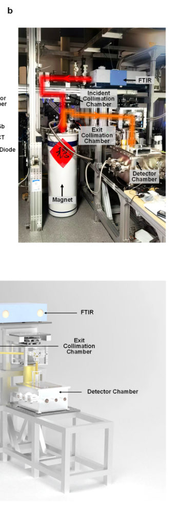
<figcaption class="paper-figure-caption"><b>Fig 1.</b> Fig. 1 Schematic plot and photos of the collimated magneto-infrared spectroscopy</figcaption>
</figure>
<figure class="paper-figure-card">
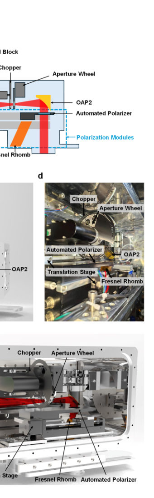
<figcaption class="paper-figure-caption"><b>Fig 2.</b> Fig. 2 Design and photo of the incident collimation chamber. This chamber performs</figcaption>
</figure>
<figure class="paper-figure-card">

<figcaption class="paper-figure-caption"><b>Fig 3.</b> Fig. 3 Design and photo of the exit collimation chamber. The signal beam emerging</figcaption>
</figure>
<figure class="paper-figure-card">
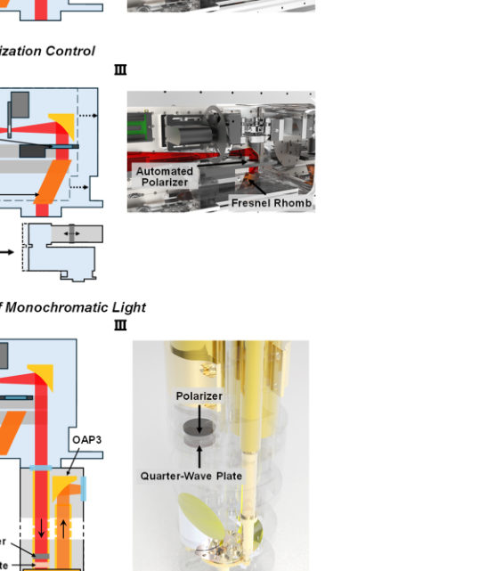
<figcaption class="paper-figure-caption"><b>Fig 4.</b> Fig. 4 The in-situ polarization module for different configurations. Schematic diagrams</figcaption>
</figure>
<figure class="paper-figure-card">
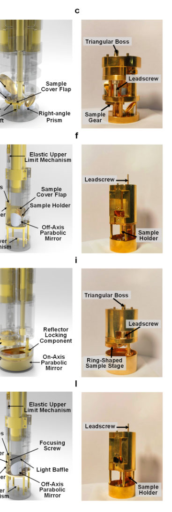
<figcaption class="paper-figure-caption"><b>Fig 5.</b> Fig. 5 Magneto-infrared focusing modules for transmission and reflection geometries.</figcaption>
</figure>
</div>

<p><strong>Summary.</strong> This paper introduces an advanced magneto-infrared spectroscopy system designed to overcome polarization degradation caused by light beam reflections in high-field environments. By implementing a collimated optical architecture and placing the polarization module outside the magnet bore, the setup achieves superior polarization fidelity and low noise floors. This platform enables sensitive, continuous measurements of magnetic field effects on material optical properties via linear and circular polarimetry.</p>
<p><strong>Why it may be interesting.</strong> While not directly quantum information theory, this work represents a significant advancement in experimental quantum optics instrumentation. The ability to perform polarization-resolved spectroscopy <em>in situ</em> under extreme conditions (high B-field, vacuum) is crucial for probing fundamental quantum phenomena like Landau quantization and magnetic circular dichroism.</p>
<details>
<summary>Detailed structure</summary>
<p><strong>Main problem.</strong> The primary challenge is achieving high-fidelity, continuous in-situ polarization control for magneto-infrared spectroscopy measurements performed within strong magnetic fields.</p>
<p><strong>Main result.</strong> The authors report a novel collimated system that successfully integrates remote polarization modules and multiple interchangeable focusing optics, enabling robust polarization-resolved measurements across various geometries.</p>
<p><strong>Method.</strong> The methodology involves redesigning the optical path using Kepler type telescopes to collimate the FTIR beam, thereby suppressing detrimental multi-wall reflections in long light tubes. Polarization control is achieved externally via automated polarizers and Fresnel rhombs.</p>
<p><strong>Model / system.</strong> The system is a complex magneto-infrared spectroscopy platform featuring incident/exit collimation chambers, interchangeable focusing modules for Faraday/Voigt geometries (transmission/reflection), and an external polarization module operating under vacuum conditions. It operates within a superconducting magnet bore up to 50 mm.</p>
<p><strong>Key observables.</strong> Linear polarization extinction ratio (up to 40:1), minimum root-mean-square noise ($\le 0.0033\%$), relative transmission/reflectivity spectra as a function of magnetic field and polarization angle.</p>
<p><strong>Important parameters / regimes.</strong> Magnetic field strength (up to 12 T), sample bore size ($\sim 50 	ext{ mm}$), spectral range (broadband, VIS to FIR).</p>
<p><strong>Assumptions / limitations.</strong> The collimation design successfully suppresses higher-order wall reflections compared to conventional direct focusing schemes. The polarization module is placed outside the high-field region to maintain functionality.</p>
<p><strong>Figures summary.</strong> Figures detail the overall system schematic (Fig. 1), incident/exit collimation optics (Fig. 2, Fig. 3), the in-situ polarization module setup (Fig. 4), and the four interchangeable magneto-infrared focusing modules supporting various geometries (Faraday/Voigt transmission/reflection) (Fig. 5).</p>
<p><strong>Paper structure.</strong> The paper systematically introduces the scientific need for polarization control, details the optical engineering solution (collimation architecture), describes the modular hardware implementation (polarization module and focusing optics), and finally demonstrates its capability through measurements of linear and circular polarimetry on single crystals.</p>
</details>
<details>
<summary>Abstract</summary>
<p>Magneto-infrared spectroscopy under strong magnetic fields provides a powerful probe of Landau quantization and field-induced collective excitations, yet its full potential has long been constrained by the lack of in-situ polarization control, because the highly divergent infrared beam propagating through narrow light tubes undergoes multiple wall reflections, leading to severe polarization degradation. Here we report a collimated magneto-infrared spectroscopy system that integrates continuous in-situ polarimetry. The system employs incident and exit collimation chambers forming a Kepler type optical architecture, which converts the large-aperture FTIR output into a low-divergence beam and strongly suppresses multi-reflection trajectories inside long gold-plated light tubes, thereby enhancing both optical throughput and polarization fidelity. A remotely controlled polarization module, consisting of an automated linear polarizer and a switchable Fresnel rhomb positioned entirely outside the high-field region, enables continuous in-situ tuning between linear, circular, and arbitrary elliptical polarization states without thermal cycling, manual realignment, or breaking vacuum. Interchangeable compact focusing modules further support Faraday and Voigt geometries in both transmission and reflection experiments within a 50 mm magnet bore, providing efficient beam focusing and signal collection while maintaining polarization fidelity. The setup achieves a minimum root-mean-square noise of 0.0033%, an average noise of 0.0082%, and a linear polarization extinction ratio up to 40:1. We demonstrate the capability through continuous in-situ linear polarimetry and broadband circular polarimetry in the magneto-infrared spectroscopy of various single crystals. This platform establishes a robust experimental framework for in-situ polarization-resolved magneto-infrared spectroscopy.</p>
</details>
<p><sub><a href="#top">↑ back to top</a></sub></p>

<p><a id="paper-2607.00991"></a></p>
<h3 id="tensor-network-solvers-for-ultra-large-tight-binding-hamiltonians-algorithms-and-applications"><a href="http://arxiv.org/abs/2607.00991v1">Tensor Network Solvers for Ultra-large Tight-binding Hamiltonians: Algorithms and Applications</a></h3>
<p><strong>Authors:</strong> Tiago V. C. Antão, Anouar Moustaj, Yitao Sun, Jose L. Lado<br>
<strong>Type:</strong> theory · <strong>Category:</strong> numerical methods · <strong>PDF:</strong> <a href="https://arxiv.org/pdf/2607.00991v1">https://arxiv.org/pdf/2607.00991v1</a><br>
<strong>Analysis basis:</strong> full PDF text, analyzed in chunks
<strong>Topic relevance:</strong> <code>analog quantum simulation</code> <strong>3/5</strong> · <code>methods for driven-dissipative</code> <strong>3/5</strong> · <code>non-equilibrium dynamics</code> <strong>2/5</strong> · <code>Keldysh / 2PI / non-Gaussian methods</code> <strong>1/5</strong> · <code>correlated / nonlocal dissipation</code> <strong>1/5</strong> · <code>driven-dissipative phase transition</code> <strong>1/5</strong> · <code>entanglement &amp; information structure</code> <strong>1/5</strong></p>
<div class="figure-strip-hint">↔ Scroll figures horizontally</div>
<div class="paper-figures-scroll">
<figure class="paper-figure-card">
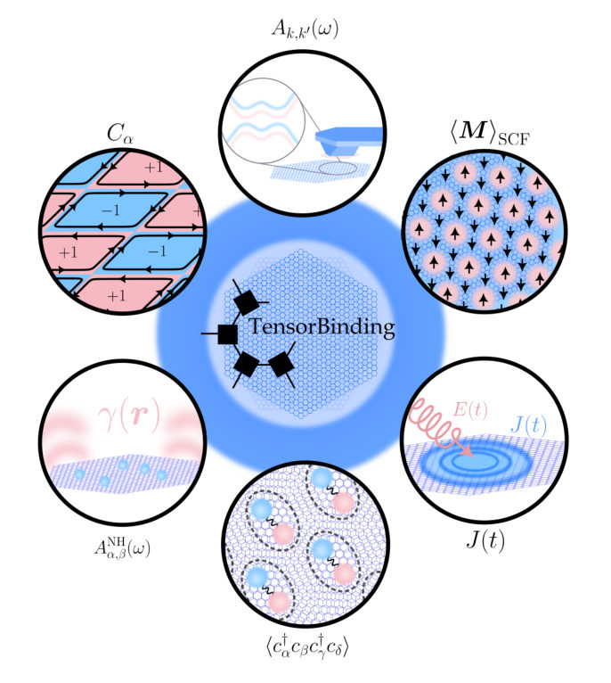
<figcaption class="paper-figure-caption"><b>Fig 1.</b> FIG. 1. Overview of the TensorBinding.jl framework and its current range of applications. The panels illustrate six classes of physical observable accessible within the framework: the momentum-resolved spectral function Ak,k′(ω) (top), the real- space Chern marker Cα revealing coexisting topological phases (left), self-consistent mean-field correlated phases, such as the magnetization ⟨M⟩SCF (right), time-dependent observables, such as the bond current J(t) under a driven electric field E(t) (bottom right), two-particle correlated states ⟨c† αcβc† γcδ⟩, such as excitons (bottom center), and non-hermitian spectral function ANH α,β for systems with modulated losses γ(r) (bottom left).</figcaption>
</figure>
<figure class="paper-figure-card">
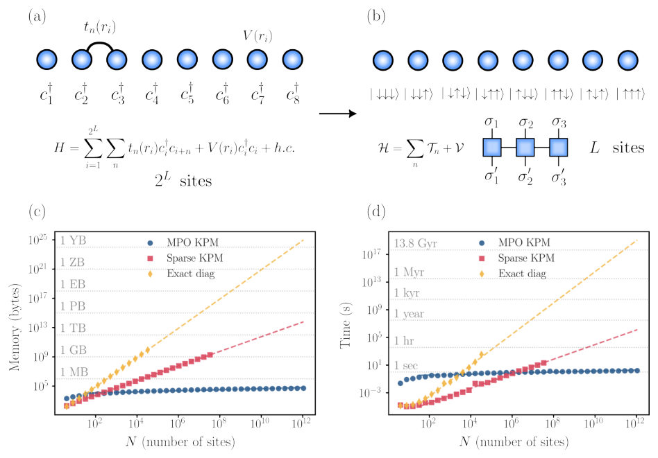
<figcaption class="paper-figure-caption"><b>Fig 2.</b> FIG. 2. Mapping and benchmarks for a 1D tight-binding chain model. (a) Tight-binding model with N = 23 = 8 sites in real space and its 23 × 23 Hamiltonian matrix with hoppings tn(ri) and on-site potential V (ri). (b) Equivalent pseudospin chain of L = log2(N) = 3 sites; spin states (σ1, σ2, σ3) index real-space sites and the Hamiltonian is encoded as a 3-core MPO. The nth neighbour hoppings are encoded as MPOs Tn and the on-site term as an MPO V (c) Memory cost of full, sparse, and MPO storage of the Hamiltonian. (d) Computation time for a local density of states via exact diagonalization, sparse-matrix KPM, and the MPO KPM implemented in TensorBinding.jl. Dahed lines are estimate, scatter...</figcaption>
</figure>
<figure class="paper-figure-card">

<figcaption class="paper-figure-caption"><b>Fig 3.</b> FIG. 3. Single-particle observables for the spatially modulated Haldane model of Eq. (11) with t2(x) = ¯t2 cos(2πx/λ). (a) Real- space Chern marker, with well-defined integer stripes reflecting alternating topological and trivial phases of period λ = Nx/2. (b) Zero-frequency LDOS, with intensity peaks localised at the domain walls between topological phases. (c) Band structure showing mini-band folding at the superlattice wavevector and a weak imprint of the gap-traversing chiral edge states. (d) Frequency-resolved LDOS in the bulk (top) and at a domain-wall edge (bottom), showing the gapped bulk spectrum and the in-gap chiral edge branch. The parameters used for these calculations are t1 =...</figcaption>
</figure>
<figure class="paper-figure-card">

<figcaption class="paper-figure-caption"><b>Fig 4.</b> FIG. 4. Non-Hermitian observables for a 1D AAH chain with the modulated loss γ(x) following a triangular pattern under open boundary conditions. (a) Spectral weight A(Re z, Im z) in the complex energy plane from the NH KPM algorithm. (b) Space-time map of the diagonal density ⟨x|ρ(t)|x⟩evolved from the half-filled ground state via the non-Hermitian von Neumann equation (RK4), and site-density traces at the loss minimum (x0 = N/4, γ = 0) and loss maximum (x = 3N/8, γ = 2γ0). (c) Single-particle amplitude |⟨x|ψ(t)⟩| from TDVP for a comb wavepacket shown in the central region of a Hermitian chain (left) and a lossy chain (middle), zoomed in a region of width w = 256 sites, and across the full...</figcaption>
</figure>
<figure class="paper-figure-card">
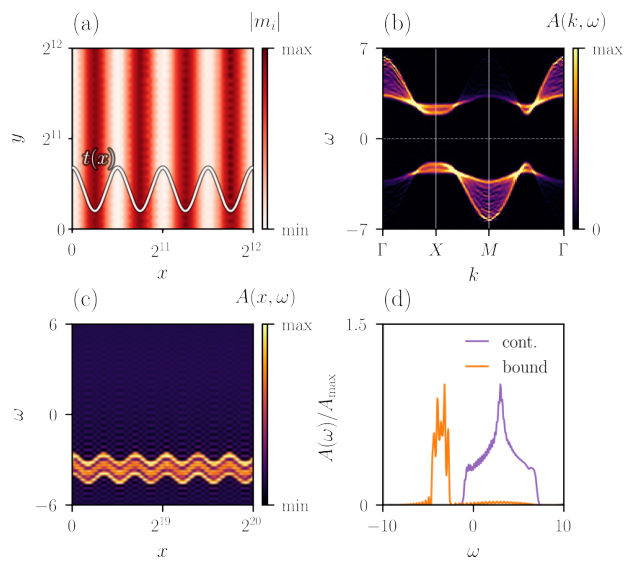
<figcaption class="paper-figure-caption"><b>Fig 5.</b> FIG. 5. Mean-field Hubbard and exciton observables for spatially modulated systems. (a) Absolute mean-field Hubbard magnetization |mi|, showing stripe order induced by the modulated hopping. (b) Spin-summed mean-field spectral function A(k, ω) along the high-symmetry path, showing the reconstructed quasiparticle bands of the converged magnetic state and its correlated gap. (c) Exciton local density of states ρ(x, ω), showing bound-state spectral weight localized in energy and modulated periodically in space, with moir´e minibands as a consequence of the incommensurability of the on-site modulation V (x). (d) Total exciton density of states, separated into scattering-continuum and...</figcaption>
</figure>
</div>

<p><strong>Summary.</strong> The paper introduces an advanced tensor network framework to solve tight-binding Hamiltonians on systems of unprecedented size. By mapping large lattices onto efficient pseudospin chains, it allows routine calculation of complex observables like spectral functions and topological invariants for quantum materials at the mesoscopic scale. This methodology overcomes severe memory bottlenecks associated with simulating ultra-large quantum systems.</p>
<p><strong>Why it may be interesting.</strong> This work provides a powerful, scalable numerical toolkit for simulating complex quantum matter phenomena (like moiré physics or correlated states) that are typically restricted to small system sizes by conventional diagonalization methods.</p>
<details>
<summary>Detailed structure</summary>
<p><strong>Main problem.</strong> The primary challenge is simulating quantum materials on systems so large (billions of sites) that explicit matrix representations for tight-binding Hamiltonians become computationally prohibitive.</p>
<p><strong>Main result.</strong> The authors present a unified tensor-network methodology capable of solving these ultra-large scale problems by mapping the system onto a manageable pseudospin chain, keeping memory scaling logarithmic with system size.</p>
<p><strong>Method.</strong> They utilize Matrix Product Operators (MPO) and Tensor Network algorithms, combined with the Kernel Polynomial Method (KPM), to evaluate observables without explicit diagonalization or storage of massive matrices.</p>
<p><strong>Model / system.</strong> The method applies to tight-binding Hamiltonians on various lattices, including moiré/super-moiré heterostructures and quasicrystals. It handles complex physics like non-Hermiticity, correlation effects (Hubbard model), and excitonic binding.</p>
<p><strong>Key observables.</strong> Spectral functions $A(\mathbf{k}, \omega)$, real-space topological invariants (Chern marker), local density of states (LDOS), time-dependent currents, and exciton spectral weight.</p>
<p><strong>Important parameters / regimes.</strong> System sizes up to billions of sites; bond dimension ($\chi$) remaining modest (tens) for compressible structures; Chebyshev polynomial order ($N_{	ext{cheb}}$).</p>
<p><strong>Assumptions / limitations.</strong> The efficiency relies heavily on the tensor network compressibility inherent in the real-space structure, and spectral calculations are approximations via KPM.</p>
<p><strong>Figures summary.</strong> Figures illustrate the mapping from large real-space lattices to 1D pseudospin chains (Fig. 2), the calculation of various observables like spectral functions and topological markers using MPO representations (Figs. 1, 6, 7, 10).</p>
<p><strong>Paper structure.</strong> The paper systematically develops algorithms for encoding Hamiltonians ($\hat{H}$) as MPOs, then details specialized pathways to compute key quantities: spectral functions via KPM, topological invariants via position operators, and time evolution/correlations using MPO-MPO products.</p>
</details>
<details>
<summary>Abstract</summary>
<p>Understanding quantum materials at meso and even macroscopic scales requires tight-binding calculations on system sizes where explicit matrix representations become prohibitively costly. This represents a major bottleneck to rationalize phenomena in moiré and super-moiré heterostructures and quasicrystals. Here, we present a unified tensor-network methodology to solve tight-binding problems at exceptionally large scales, by mapping a system of $N = 2^L$ sites onto a many-body problem of $L$ pseudospin sites, which is subsequently solved with tensor network algorithms. For Hamiltonians with compressible real-space structure, the tensor network bond dimension remains modest, typically of order a few tens, independent of $N$.Tensor network representations of arbitrary hopping functions including long-range, spatially modulated, and twisted-layer couplings are built with quantics tensor cross interpolation, and all physical observables are evaluated entirely with tensor network algebra without explicit matrix storage or diagonalization. We demonstrate applications to spectral functions, momentum-space spectra via the tensor-network quantum Fourier transform, real-space topological invariants, real-time dynamics, correlation induced symmetry breaking with self-consistent mean-field calculations, non-Hermitian phenomena, and excitonic many-body physics. Our methodology enables routinely solving systems with billions of sites, by leveraging the tensor network compressibility of real-space structures, and establishing a flexible framework to study quantum matter at ultra-large length scales. The methodology is implemented in the open-source Julia package TensorBinding.jl.</p>
</details>
<p><sub><a href="#top">↑ back to top</a></sub></p>

<p><a id="paper-2607.00699"></a></p>
<h3 id="dependence-of-charge-separation-efficiency-on-the-exciton-charge-transfer-offset-and-gaussian-disorder-in-organic-solar-cells"><a href="http://arxiv.org/abs/2607.00699v1">Dependence of charge separation efficiency on the exciton-charge transfer offset and Gaussian disorder in organic solar cells</a></h3>
<p><strong>Authors:</strong> Maik Schwuchow, Carsten Deibel, Angela Thränhardt<br>
<strong>Type:</strong> theory · <strong>Category:</strong> disordered systems and neural networks · <strong>PDF:</strong> <a href="https://arxiv.org/pdf/2607.00699v1">https://arxiv.org/pdf/2607.00699v1</a><br>
<strong>Analysis basis:</strong> full PDF text, analyzed in chunks
<strong>Topic relevance:</strong> <code>methods for driven-dissipative</code> <strong>3/5</strong> · <code>non-equilibrium dynamics</code> <strong>3/5</strong> · <code>non-equilibrium universality</code> <strong>2/5</strong> · <code>Keldysh / 2PI / non-Gaussian methods</code> <strong>1/5</strong> · <code>correlated / nonlocal dissipation</code> <strong>1/5</strong> · <code>driven-dissipative phase transition</code> <strong>1/5</strong></p>
<div class="figure-strip-hint">↔ Scroll figures horizontally</div>
<div class="paper-figures-scroll">
<figure class="paper-figure-card">
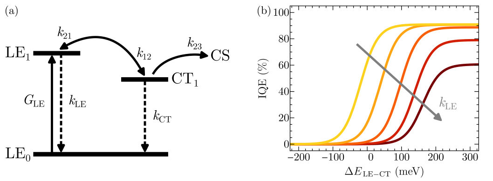
<figcaption class="paper-figure-caption"><b>Fig 1.</b> FIG. 1. (a) Jablonski diagram of the two-state rate model illustrating the local exciton (LE) and CT states as well as the transition and decay rate constants. (b) Exemplary plots of Eq. 3 for an increase of the exciton decay rate kLE of about 4 orders of magnitude. All other parameters are constant.</figcaption>
</figure>
<figure class="paper-figure-card">
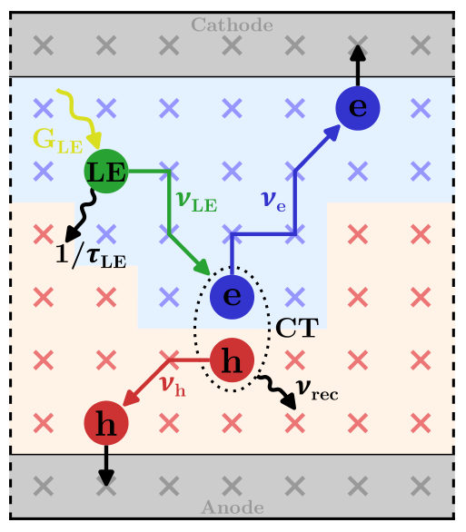
<figcaption class="paper-figure-caption"><b>Fig 2.</b> FIG. 2. Simplified 2D schematic illustrating the main aspects of charge separation in the kinetic Monte-Carlo simulation used in this work. Local exciton (LE) generation occurs with a constant rate on a simple cubic lattice of donor (red) and acceptor (blue) sites. Excitons move diffusively without disor- der effecting the exciton energy levels. In order to separate the charges, the excitons have to dissociate into a charge trans- fer (CT) state at a donor–acceptor interface. If the charge carriers can overcome their mutual Coulomb attraction and move toward their respective electrodes (grey), an extraction event can occur. Excitons and CT states may recombine to the ground state, removing...</figcaption>
</figure>
<figure class="paper-figure-card">

<figcaption class="paper-figure-caption"><b>Fig 3.</b> FIG. 3. Diagram illustrating the two scenarios of varying ∆ELE−CT in the simulation. Scenario 1 increases HOMO and LUMO energies of the acceptor in equal steps, keeping the donor energies constant. Scenario 2 decreases the HOMO energy of the donor, keeping the acceptor energies constant. In both cases, the energy of the CT state at a donor–acceptor interface increases (see Eq. 8). Scenario 2 also increases the donor exciton energy.</figcaption>
</figure>
<figure class="paper-figure-card">

<figcaption class="paper-figure-caption"><b>Fig 4.</b> FIG. 4. (a) kMC data on the dependence of the internal quantum efficiency (IQE) on the energetic offset of local exciton (LE) and charge-transfer state (CT) for three exciton lifetimes τLE. Solid lines and red tones represent scenario 1 (varying acceptor HOMO and LUMO), dashed lines and blue tones represent scenario 2 (varying donor HOMO) of creating the offset in the simulation (see Fig. 3). The sigmoidal shape from rate model theory is clearly visible. As the offset decreases, exciton repopulation and decay increase, which limits the IQE. The inset shows, that the data for both scenarios coincides, when a horizontal shift is applied (see text). All lines (dashed and solid) are merely guides...</figcaption>
</figure>
<figure class="paper-figure-card">

<figcaption class="paper-figure-caption"><b>Fig 5.</b> FIG. 5. (a) kMC steady-state data of the internal quantum efficiency (IQE) and (b) relative population dependence on the energetic offset between local exciton (LE) and charge transfer (CT) state ∆ELE−CT at various disorder strengths characterized by the standard deviation σdis. τLE has been set to 1 ns. In order to create the offset, scenario 1 of the energy level shift as described in the main text and Fig. 3 was used in the simulation. Introducing disorder in the classic high-offset regime reproduces the mostly detrimental trend for charge separation known in the literature (see main text), that arises from trapping and reduced carrier mobilities. Low-offset systems can greatly benefit from...</figcaption>
</figure>
</div>

<p><strong>Summary.</strong> This research analyzes charge separation efficiency in organic solar cells by comparing analytical rate models with detailed kMC simulations. It demonstrates that while large offsets are traditionally favored, introducing Gaussian energetic disorder can unexpectedly boost efficiency at low offsets. This enhancement occurs because thermalization within the disordered energy landscape generates an effective driving force for charge separation.</p>
<p><strong>Why it may be interesting.</strong> This work models complex, non-equilibrium charge dynamics in a disordered solid-state material using advanced simulation techniques (kMC), directly addressing how local energetic disorder modifies fundamental electronic processes like exciton dissociation—a key topic in open quantum systems and condensed matter theory.</p>
<details>
<summary>Detailed structure</summary>
<p><strong>Main problem.</strong> The study investigates how charge separation efficiency in organic solar cells depends on the energetic offset between local exciton (LE) and charge-transfer (CT) states, particularly when significant Gaussian energetic disorder is present.</p>
<p><strong>Main result.</strong> Energetic disorder can significantly boost charge separation efficiency at intermediate and low offsets by creating an effective driving force through thermalization within the disordered density of states. The rate model successfully captures shifts in efficiency explained by state degeneracies.</p>
<p><strong>Method.</strong> The work compares results from a macroscopic two-state rate model against detailed, microscopic three-dimensional kinetic Monte-Carlo (kMC) simulations.</p>
<p><strong>Model / system.</strong> The system is an organic solar cell modeled on a 3D simple cubic lattice simulating donor-acceptor interfaces. The dynamics involve exciton hopping, charge hopping, and dissociation governed by the $\Delta E_{LE-CT}$ offset.</p>
<p><strong>Key observables.</strong> Internal Quantum Efficiency (IQE), relative steady-state populations of LE and CT states, and average energy levels ($\langle 	ext{ECT} 
angle$).</p>
<p><strong>Important parameters / regimes.</strong> Exciton-Charge Transfer Offset ($\Delta E_{LE-CT}$), Gaussian disorder strength ($\sigma_{	ext{dis}}$), and temperature ($k_B T$).</p>
<p><strong>Assumptions / limitations.</strong> The rate model assumes constant rates and ignores triplet excitons; the kMC simulations assume a linear potential gradient (1 V built-in voltage) and focus on short-circuit conditions.</p>
<p><strong>Figures summary.</strong> Figures illustrate IQE dependence on $\Delta E_{LE-CT}$ for different disorder strengths, showing crossover behavior. Other figures map out how average CT energy shifts with disorder strength.</p>
<p><strong>Paper structure.</strong> The paper first establishes the rate model's agreement with kMC in the absence of disorder. It then introduces Gaussian disorder via kMC simulations to analyze the resulting crossover behavior and the mechanism by which thermalization creates an effective driving force for charge separation.</p>
</details>
<details>
<summary>Abstract</summary>
<p>State-of-the-art organic solar cells increasingly rely on low-offset semiconductor blends, challenging the traditional requirement of a large energetic driving force for efficient charge separation. In these systems, the energetic offset $ΔE_{\mathrm{LE-CT}}$ between local exciton (LE) and charge-transfer (CT) states approaches the thermal energy, making exciton-CT hybridization and thermal repopulation of the exciton level critical to device performance. In this work, we directly compare a macroscopic two-state rate model with three-dimensional kinetic Monte-Carlo (kMC) simulations to investigate microscopic charge separation dynamics and the role of Gaussian energetic disorder. We demonstrate that in the absence of disorder, the analytical rate model accurately reproduces kMC predictions for the whole range of $ΔE_{\mathrm{LE-CT}}$. Specifically, the macroscopic model successfully explains horizontal shifts in the internal quantum efficiency curves that arise depending on how the energetic offset is physically realized in the constituent molecules. We show that these variations can be captured entirely through the ratio of degeneracies of the LE and CT states, respectively. Introducing Gaussian energetic disorder into the kMC simulation reveals a distinct crossover behavior depending on $ΔE_{\mathrm{LE-CT}}$. While disorder is mostly detrimental at large offsets, it can significantly boost efficiency at intermediate and low offsets. Thermalization of charge carriers within the disorder-broadened density of states creates an effective driving force allowing charge separation even at zero or negative energetic offsets.</p>
</details>
<p><sub><a href="#top">↑ back to top</a></sub></p>

<p><a id="paper-2607.00365"></a></p>
<h3 id="when-ai-meets-quantum-information-a-comprehensive-review"><a href="http://arxiv.org/abs/2607.00365v1">When AI meets quantum information: A comprehensive review</a></h3>
<p><strong>Authors:</strong> Min Chen, Yu Gan, Xin Jin, Yuqing Li, Junqi Wang, Zeguan Wu, Yunfei Wang, Bingzhi Zhang, Priyam Srivastava, Tianlong Chen, Ankit Kulshrestha, Yuan Liu, Juan José Mendoza-Arenas, Kaushik P. Seshadreesan, Sarvagya Upadhyay, Xueyue Zhang, Quntao Zhuang, Junyu Liu<br>
<strong>Type:</strong> theory · <strong>Category:</strong> quantum information and computing · <strong>PDF:</strong> <a href="https://arxiv.org/pdf/2607.00365v1">https://arxiv.org/pdf/2607.00365v1</a><br>
<strong>Analysis basis:</strong> full PDF text, analyzed in chunks
<strong>Topic relevance:</strong> <code>quantum measurements</code> <strong>3/5</strong> · <code>entanglement &amp; information structure</code> <strong>2/5</strong> · <code>measurement-induced transitions</code> <strong>2/5</strong> · <code>Keldysh / 2PI / non-Gaussian methods</code> <strong>1/5</strong> · <code>correlated / nonlocal dissipation</code> <strong>1/5</strong> · <code>driven-dissipative phase transition</code> <strong>1/5</strong> · <code>methods for driven-dissipative</code> <strong>1/5</strong></p>
<div class="figure-strip-hint">↔ Scroll figures horizontally</div>
<div class="paper-figures-scroll">
<figure class="paper-figure-card">
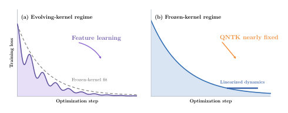
<figcaption class="paper-figure-caption"><b>Fig 1.</b> FIG. 2. Schematic loss trajectories in two QNTK regimes. Right: in the frozen-kernel regime, the QNTK remains ap- proximately constant during early training, so the loss follows the smooth decay predicted by the linearized tangent-kernel dynamics. Left: when the kernel evolves with the parameters, the training trajectory departs from the frozen-kernel picture; this weakly nonlinear regime enables representation learning and can no longer be captured by a fixed-kernel approxima- tion alone.</figcaption>
</figure>
<figure class="paper-figure-card">

<figcaption class="paper-figure-caption"><b>Fig 2.</b> FIG. 1. Schematic illustration of double descent in a kernel- learning setting. As model complexity approaches the inter- polation threshold, the test error can peak before decreasing again in a deeper interpolating regime.</figcaption>
</figure>
<figure class="paper-figure-card">

<figcaption class="paper-figure-caption"><b>Fig 3.</b> FIG. 3. Schematic overview of tensor notation and basic multilinear operations. Top left: scalars, vectors, matrices, and higher- order tensors are distinguished by the number of open indices (legs). Top right: tensor contraction sums over a shared index, generalizing matrix multiplication. Bottom left: unfolding or matricization groups tensor modes into a matrix so that standard linear algebra tools such as SVD can be applied. Bottom right: the tensor product combines two tensors by concatenating their index sets without summing over any shared mode.</figcaption>
</figure>
<figure class="paper-figure-card">

<figcaption class="paper-figure-caption"><b>Fig 4.</b> FIG. 4. Two core ideas behind tensor-network representations. Left: an order-n tensor can be factorized into a chain of low-order cores in an MPS or TT decomposition, where the physical indices remain open and the virtual bonds αk transmit correlations between neighboring cores. Right: SVD exposes the singular spectrum across a bipartition, and keeping only the largest χ singular values yields a low-rank approximation that sets the effective bond dimension and compresses the representation.</figcaption>
</figure>
</div>

<p><strong>Summary.</strong> This review comprehensively surveys the bidirectional relationship between Artificial Intelligence and Quantum Information. It details how AI can be applied to control and analyze quantum hardware, while also exploring how quantum structures—such as tensor networks—can enhance machine learning models. The paper emphasizes that future progress hinges on deeply integrating theoretical understanding with experimental realities.</p>
<p><strong>Why it may be interesting.</strong> It provides a high-level roadmap connecting modern ML techniques (like generative models and optimization theory) directly to the fundamental challenges of quantum computation, which is crucial for theorists working on resource estimation and algorithm design.</p>
<details>
<summary>Detailed structure</summary>
<p><strong>Main problem.</strong> The review surveys the rapidly co-evolving interface between Artificial Intelligence (AI) and Quantum Information (QI). It addresses how AI can be used to control quantum systems, and conversely, how quantum computation enhances machine learning.</p>
<p><strong>Main result.</strong> Progress requires a tighter integration of theory, experiment, and hybrid quantum-classical systems. The review details specific methodologies for both directions of interaction.</p>
<p><strong>Method.</strong> The paper is a comprehensive survey organizing recent progress into two main streams: AI for QI (e.g., training algorithms on noisy data) and QI for AI (e.g., using tensor networks for ML representations).</p>
<p><strong>Model / system.</strong> The underlying physical system involves $n$-qubit quantum systems described by density operators ($
ho$) evolving under unitary or open-system dynamics. The analysis uses concepts like POVM measurements, expectation values, and parameterized quantum circuits (PQCs).</p>
<p><strong>Key observables.</strong> Expectation values $\langle O 
angle_
ho$, measurement probabilities $p_
ho(s)$, Quantum Fisher Information Matrix (QFIM), and expected return in RL ($J(\pi)$).</p>
<p><strong>Important parameters / regimes.</strong> The complexity scales are governed by the number of qubits ($n$), the required precision ($\epsilon$), and the structure/sparsity assumptions used for approximation.</p>
<p><strong>Assumptions / limitations.</strong> A key assumption is that quantum information must be accessed indirectly via classical measurements. The review notes limitations when drawing analogies between classical and quantum statistical learning theory.</p>
<p><strong>Paper structure.</strong> The paper is structured by reviewing the two primary interaction directions: AI for QI (covering tasks like algorithm discovery and hardware stabilization) and QI for AI (examining algorithmic speedups, expressivity, and tensor network representations). It concludes with cross-cutting challenges.</p>
</details>
<details>
<summary>Abstract</summary>
<p>Artificial intelligence (AI) and quantum information (QI) are rapidly co-evolving. AI is becoming a practical tool for learning, designing, controlling, and verifying quantum systems, while QI offers new computational models, representational structures, and learning-theoretic questions for AI. This survey reviews the interface from both directions. In the AI for QI direction, we organize recent progress around the central tasks of extracting information from limited measurements, training and discovering quantum algorithms, stabilizing noisy hardware, automating experimental and programming workflows, and extending learning-based methods to sensing and networking. In the QI for AI direction, we examine how quantum computation and quantum-inspired structures affect learning through algorithmic speedups, expressivity, trainability, generalization, neural-network design, and tensor-network representations. We close by identifying cross-cutting challenges in reproducibility, scalability, hardware realism, and co-design, arguing that progress will depend on tighter integration of theory, experiment, and hybrid quantum--classical systems.</p>
</details>
<p><sub><a href="#top">↑ back to top</a></sub></p>

<p><a id="paper-2607.01192"></a></p>
<h3 id="confinement-in-a-magnetically-induced-wsemath537math-quantum-dots"><a href="http://arxiv.org/abs/2607.01192v1">Confinement in a magnetically induced WSe$_2$ quantum dots</a></h3>
<p><strong>Authors:</strong> Rachid El Aitouni, Mohammed El Azar, Clarence Cortes, David Laroze, Ahmed Jellal<br>
<strong>Type:</strong> theory · <strong>Category:</strong> other · <strong>PDF:</strong> <a href="https://arxiv.org/pdf/2607.01192v1">https://arxiv.org/pdf/2607.01192v1</a><br>
<strong>Analysis basis:</strong> full PDF text, analyzed in chunks
<strong>Topic relevance:</strong> <code>spintronics-quantum-optics interface</code> <strong>3/5</strong> · <code>Keldysh / 2PI / non-Gaussian methods</code> <strong>2/5</strong> · <code>driven-dissipative phase transition</code> <strong>2/5</strong> · <code>Kondo &amp; dissipative impurity</code> <strong>1/5</strong> · <code>methods for driven-dissipative</code> <strong>1/5</strong> · <code>non-equilibrium dynamics</code> <strong>1/5</strong></p>
<div class="figure-strip-hint">↔ Scroll figures horizontally</div>
<div class="paper-figures-scroll">
<figure class="paper-figure-card">

<figcaption class="paper-figure-caption"><b>Fig 1.</b> FIG. 1. Schematic of a monolayer WSe2 sheet lying in the xy- plane, subjected to a perpendicular magnetic field ⃗B = Bˆz confined to a circular region of radius R. The field is uniform inside the dot (r &lt; R) and vanishes outside (r &gt; R) in the symmetric gauge. Incident Dirac waves Ψinc q propagate along the x-direction, penetrate the magnetic boundary, and form standing waves Ψins k inside the dot, while reflected waves Ψref q scatter outward. The inset coordinate system shows the layer orientation with ˆz normal to the WSe2 plane.</figcaption>
</figure>
<figure class="paper-figure-card">

<figcaption class="paper-figure-caption"><b>Fig 2.</b> FIG. 2. (Color online) The scattering efficiency Q as a function of the magnetic field B for different values E (0.8, 1, 2 eV), for R = 50 nm with intrinsic values λc = 75 meV, λv = 112, 5 meV, ∆= 0.85 eV.</figcaption>
</figure>
<figure class="paper-figure-card">

<figcaption class="paper-figure-caption"><b>Fig 3.</b> FIG. 3. (Color online) The scattering efficiency Q as a function of the radius for three values of magnetic field (B = 1, 5, 10 T), with E = 1 eV.</figcaption>
</figure>
<figure class="paper-figure-card">

<figcaption class="paper-figure-caption"><b>Fig 4.</b> FIG. 4. Density as a function of x and y for two energies: E = 0.8 eV (top row) and E = 1 eV (bottom row). The top row corresponds to magnetic fields B = 1 T, B = 5.9 T, and B = 9.26 T, while the bottom row corresponds to B = 9, B = 7.02 T, and B = 11.6 T. These configurations illustrate the resonance intensities presented in Fig. 2.</figcaption>
</figure>
</div>

<p><strong>Summary.</strong> This paper theoretically analyzes electron confinement and scattering in WSe2 quantum dots induced by localized magnetic fields. By solving the Dirac equation with complex boundary conditions, the authors show that the magnetic field suppresses tunneling and creates tunable resonant states. This establishes WSe2 as a promising platform for next-generation spintronic and valleytronic devices.</p>
<p><strong>Why it may be interesting.</strong> This work provides a detailed theoretical framework for controlling quantum transport in 2D materials using magnetic fields, which is highly relevant to understanding engineered quantum confinement effects beyond simple particle-in-a-box models.</p>
<details>
<summary>Detailed structure</summary>
<p><strong>Main problem.</strong> The study theoretically investigates how confining massive Dirac fermions within a quantum dot formed by a localized magnetic field affects electron transport in WSe2.</p>
<p><strong>Main result.</strong> The localized magnetic field effectively suppresses Klein tunneling and promotes the formation of stable, tunable quasibound states, leading to sharp resonance peaks.</p>
<p><strong>Method.</strong> The authors derived exact wave functions and scattering coefficients using advanced mathematical techniques involving Kummer's confluent hypergeometric functions and Bessel/Hankel functions.</p>
<p><strong>Model / system.</strong> The system is monolayer WSe2, modeled by an effective Dirac Hamiltonian incorporating spin-orbit coupling. The geometry involves a circular quantum dot subjected to a perpendicular magnetic field confined within the dot region.</p>
<p><strong>Key observables.</strong> Scattering efficiency (Q), scattering cross-section ($\sigma$), and carrier density distributions ($
ho(x, y)$).</p>
<p><strong>Important parameters / regimes.</strong> Incident energy ($E$), magnetic field strength ($B$), and quantum dot radius ($R$).</p>
<p><strong>Assumptions / limitations.</strong> The analysis relies on the effective Dirac Hamiltonian approach and assumes specific boundary conditions for the magnetic vector potential.</p>
<p><strong>Figures summary.</strong> Figures illustrate scattering efficiency (Q) versus B or R, showing resonance behavior, and density probability distributions ($
ho$) confirming carrier localization patterns.</p>
<p><strong>Paper structure.</strong> The paper establishes the physical model using the Dirac Hamiltonian, derives analytical solutions by solving coupled differential equations in polar coordinates, calculates scattering coefficients via boundary matching, and finally analyzes the dependence of transport properties on $E$, $B$, and $R$.</p>
</details>
<details>
<summary>Abstract</summary>
<p>Monolayer tungsten diselenide (WSe$_2$) has become a suitable platform for quantum transport and spintronics and valleytronics applications because it possesses an intrinsic band gap and strong spin-orbit coupling and spin-valley coupling features. The electrostatic confinement of Dirac fermions proves challenging in graphene because of Klein tunneling, yet WSe$_2$ provides an environment that supports both carrier localization and the development of confined quantum states. In this work, we theoretically investigate the confinement of massive Dirac fermions in a WSe$_2$ quantum dot generated by a localized magnetic field. Using the effective Dirac Hamiltonian in the presence of a magnetic flux, we derive the exact wave functions and scattering coefficients by employing Kummer's confluent hypergeometric functions together with Bessel and Hankel functions. Our results show that the localized magnetic field provides an efficient mechanism to suppress Klein tunneling and promote the formation of stable quasibound states. We systematically examine the scattering efficiency and carrier density distributions as functions of the incident energy, magnetic field strength, and quantum dot radius. We find that low-energy carriers are strongly confined by the magnetic barrier, while the interplay between magnetic localization and geometric confinement gives rise to sharp and tunable resonance peaks. These results provide valuable insight into the control of spin-valley transport in transition metal dichalcogenide nanostructures and establish a theoretical basis for the development of quantum confinement devices and quantum information technologies.</p>
</details>
<p><sub><a href="#top">↑ back to top</a></sub></p>

<p><a id="paper-2607.00797"></a></p>
<h3 id="hierarchy-of-hidden-nonlocality-a-genuine-activation-of-incompletability"><a href="http://arxiv.org/abs/2607.00797v1">Hierarchy of hidden nonlocality: A genuine activation of Incompletability</a></h3>
<p><strong>Authors:</strong> Soumajit Das, Shampa Mondal, Preeti Parashar, Atanu Bhunia<br>
<strong>Type:</strong> theory · <strong>Category:</strong> other · <strong>PDF:</strong> <a href="https://arxiv.org/pdf/2607.00797v1">https://arxiv.org/pdf/2607.00797v1</a><br>
<strong>Analysis basis:</strong> full PDF text, analyzed in chunks
<strong>Topic relevance:</strong> <code>entanglement &amp; information structure</code> <strong>3/5</strong> · <code>quantum measurements</code> <strong>3/5</strong> · <code>measurement-induced transitions</code> <strong>2/5</strong> · <code>Keldysh / 2PI / non-Gaussian methods</code> <strong>1/5</strong> · <code>correlated / nonlocal dissipation</code> <strong>1/5</strong></p>
<div class="figure-strip-hint">↔ Scroll figures horizontally</div>
<div class="paper-figures-scroll">
<figure class="paper-figure-card">
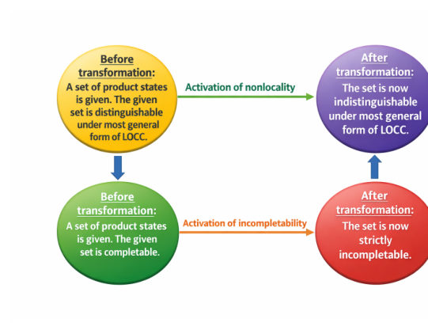
<figcaption class="paper-figure-caption"><b>Fig 1.</b> FIG. 1: Schematic illustration of the proposed transformation. A LOCC distinguishable, completable set of product state is trans- formed into a strictly incompletable, LOCC-indistinguishable set, si- multaneously activating incompletability and nonlocality.</figcaption>
</figure>
<figure class="paper-figure-card">

<figcaption class="paper-figure-caption"><b>Fig 2.</b> FIG. 2: Hierarchy between activation of nonlocality and activation of incompletability. Every incompletability activable set is nonlocality activable, while the converse does not hold in general.</figcaption>
</figure>
</div>

<p><strong>Summary.</strong> This work develops a rigorous framework to compare different forms of quantum correlation by introducing the concept of 'activation of incompletability.' The authors prove that this phenomenon implies nonlocality, establishing a strict hierarchy between the two. This sheds new light on how local distinguishability breaks down when considering fundamental structural properties like basis completion.</p>
<p><strong>Why it may be interesting.</strong> It provides a deep resource-theoretic understanding of quantum correlations, linking geometric properties (completeness) to operational limitations (LOCC distinguishability) in a way that is highly relevant for characterizing genuine nonclassicality.</p>
<details>
<summary>Detailed structure</summary>
<p><strong>Main problem.</strong> The paper investigates the operational relationship between local distinguishability, quantum incompletability, and nonlocality for sets of orthogonal quantum states.</p>
<p><strong>Main result.</strong> It establishes a strict hierarchy: activating incompletability implies activating nonlocality, but the reverse implication fails. Furthermore, it shows that such activation can be achieved while extending the set to a basis that is no longer perfectly distinguishable by LOCC.</p>
<p><strong>Method.</strong> The analysis uses theoretical constructions involving Local Operations and Classical Communication (LOCC) protocols applied to multipartite quantum states, defining concepts like 'activation of incompletability' via measurements.</p>
<p><strong>Model / system.</strong> The system under study consists of sets of mutually orthogonal quantum states in tensor product Hilbert spaces ($\mathcal{H}_1 \otimes \cdots \otimes \mathcal{H}_n$), analyzed using the operational constraints of LOCC and LICC.</p>
<p><strong>Key observables.</strong> Local distinguishability (by LOCC), Incompletability, Nonlocality, Quantum Coherence, and local redundancy.</p>
<p><strong>Important parameters / regimes.</strong> The dimensionality of the Hilbert space ($d_1, d_2, \dots$) and the specific structure of the orthogonal state sets are crucial parameters.</p>
<p><strong>Assumptions / limitations.</strong> The analysis is fundamentally restricted to operations achievable via LOCC or LICC, which defines the operational boundaries for distinguishability claims.</p>
<p><strong>Figures summary.</strong> Figures schematically illustrate the hierarchy between activation phenomena (Incompleteness $\implies$ Nonlocality) and show examples of states that activate nonlocality without activating incompletability.</p>
<p><strong>Paper structure.</strong> The paper proceeds by defining necessary concepts (OPLM, locally irreducible/indistinguishable sets), then constructing explicit counterexamples ($S_3$) to establish the hierarchy, and finally analyzing the implications within the LICC framework concerning coherence.</p>
</details>
<details>
<summary>Abstract</summary>
<p>Quantum nonlocality admits several operational manifestations, one of which emerges from sets of orthogonal quantum states that cannot be perfectly distinguished by local operations and classical communication (LOCC). Such sets are regarded as nonlocal because their perfect discrimination requires global measurements. In contrast, sets that are perfectly distinguishable by LOCC are generally considered locally accessible and operationally classical. In this work, we investigate the role of incompletability in local state discrimination and introduce the notion of \emph{activation of incompletability}. Specifically, we demonstrate the existence of orthogonal sets that are initially perfectly distinguishable by LOCC and free from local redundancy, but which can be transformed via LOCC into strictly incompletable sets. We prove that activation of incompletability necessarily implies activation of nonlocality, whereas the converse fails in general, thereby establishing a hierarchy between the two activation phenomena. Furthermore, within the framework of local incoherent operations and classical communication (LICC), we show that any set whose incompletability can be activated can nevertheless be extended to a complete orthonormal basis of the Hilbert space, although the resulting completed basis is no longer perfectly distinguishable by LOCC. Our results uncover a fundamental interplay among local distinguishability, incompletability, coherence, and nonlocality, and provide new insight into the structure of locally accessible quantum information.</p>
</details>
<p><sub><a href="#top">↑ back to top</a></sub></p>

<p><a id="paper-2607.00998"></a></p>
<h3 id="limitations-of-error-model-approximations-in-quantum-network-simulation"><a href="http://arxiv.org/abs/2607.00998v1">Limitations of Error Model Approximations in Quantum Network Simulation</a></h3>
<p><strong>Authors:</strong> Julia Freund, Jorge Miguel-Ramiro, Julius Wallnöfer, Wolfgang Dür<br>
<strong>Type:</strong> theory · <strong>Category:</strong> quantum information and computing · <strong>PDF:</strong> <a href="https://arxiv.org/pdf/2607.00998v1">https://arxiv.org/pdf/2607.00998v1</a><br>
<strong>Analysis basis:</strong> full PDF text, analyzed in chunks
<strong>Topic relevance:</strong> <code>methods for driven-dissipative</code> <strong>3/5</strong> · <code>entanglement &amp; information structure</code> <strong>2/5</strong> · <code>non-equilibrium dynamics</code> <strong>2/5</strong> · <code>Keldysh / 2PI / non-Gaussian methods</code> <strong>1/5</strong> · <code>correlated / nonlocal dissipation</code> <strong>1/5</strong> · <code>driven-dissipative phase transition</code> <strong>1/5</strong></p>
<div class="figure-strip-hint">↔ Scroll figures horizontally</div>
<div class="paper-figures-scroll">
<figure class="paper-figure-card">

<figcaption class="paper-figure-caption"><b>Fig 1.</b> FIG. 1. A real quantum network (left) represents the true out- come of a communication task, e.g., successfully establishing a multipartite entangled state between Alice, Bob, Charlie, and Doris, while its classical simulation (right) predicts that out- come using simplified error models. Simplified assumptions on realistic noise can lead to qualitative and quantitative dis- agreement between the predicted and true outcomes in either direction.</figcaption>
</figure>
<figure class="paper-figure-card">

<figcaption class="paper-figure-caption"><b>Fig 2.</b> FIG. 3. Fidelity (left) and negativity (right) after one DEJMPS step on a pdep = 0.4 depolarized |Ψ0,0⟩Bell state, with initial fidelity/negativity 0.7/0.4. Operational noise is modeled as a deterministic over-rotation UY(±π/64), with opposite phases on the spatially separated qubits. Curves represent the 00 (olive) and 11 (purple) approximation noise outcomes, their average (blue), and the corresponding PTA (orange).</figcaption>
</figure>
<figure class="paper-figure-card">
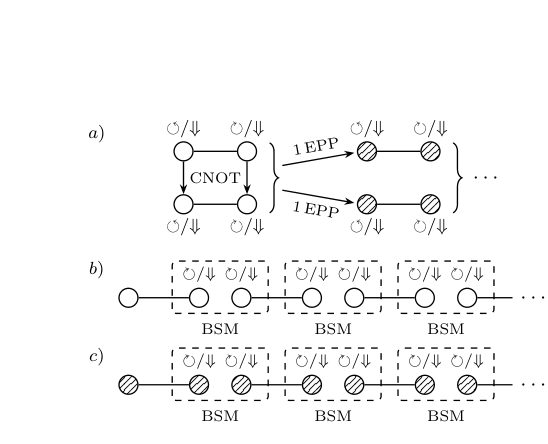
<figcaption class="paper-figure-caption"><b>Fig 3.</b> FIG. 2. Settings overview: we consider |Ψ0,0⟩Bell states with initial depolarizing or amplitude damping noise (white circles). Operational noise is either an over-rotation (curved arrows) or amplitude damping noise (double downward ar- row). a) Entanglement purification: from two identical initial states, the first pair is probabilistically distilled into a less noisy state (hatched circles) by applying local unitaries, a bi- lateral CNOT between the two copies (arrow), and local Pauli Z measurements on the second copy; the distillation succeeds, and the first pair is kept, only if the measurement outcomes coincide (00 or 11). For the next EPP round, two identical copies are again assumed,...</figcaption>
</figure>
<figure class="paper-figure-card">
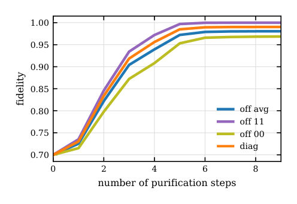
<figcaption class="paper-figure-caption"><b>Fig 4.</b> FIG. 4. Fidelity over DEJMPS EPP steps for an initial |Ψ0,0⟩ Bell state under depolarizing noise pdep = 0.4. Operational errors are modeled as deterministic UY(±π/64) over-rotations with opposite phases. The 00 (olive) and 11 (purple) approx- imation noise outcomes converge to slightly different values than their average (blue) and the corresponding PTA (or- ange).</figcaption>
</figure>
<figure class="paper-figure-card">

<figcaption class="paper-figure-caption"><b>Fig 5.</b> Fig. 4 shows the fidelity as a function of the number of purification steps for two trajectories of fixed measure- ment outcome, 00 (olive) or 11 (purple), their averages (blue) and the corresponding PTA (orange). We yield slightly different asymptotic fidelity results that accumu- late in the iterative application of the EPP. Of course, all combinations of measurement outcomes may occur, but we highlight only the most extreme cases. Similarly, we analyze how the DEJMPS protocol also shows differences in the amplitude damping vs. reset channel approximation scenario. In Fig. 5, we plot the fidelity results over the number of DEJMPS steps. We observe that the reset channel approximation...</figcaption>
</figure>
</div>

<p><strong>Summary.</strong> This paper demonstrates that relying on simplified error models (like Pauli twirling or reset channels) when simulating complex quantum networks leads to inaccurate predictions of protocol performance. By analyzing entanglement purification and swapping, the authors show that neglecting coherent noise contributions causes significant discrepancies between predicted and true fidelity values. This mandates rigorous validation using complete noise architectures for reliable quantum technology forecasting.</p>
<p><strong>Why it may be interesting.</strong> It provides critical theoretical guidance on validating quantum network simulations, warning that computational shortcuts can lead to fundamentally incorrect predictions about achievable performance thresholds.</p>
<details>
<summary>Detailed structure</summary>
<p><strong>Main problem.</strong> Simplified error models used for simulating large-scale quantum networks can lead to severe quantitative and qualitative discrepancies in predicting protocol performance.</p>
<p><strong>Main result.</strong> Neglected error contributions, particularly coherent off-diagonal terms, cause significant under-/over-estimations and outcome-dependent fidelity oscillations when compared to rigorous noise architectures.</p>
<p><strong>Method.</strong> The authors analyze the failure of common approximations like Pauli twirling or using reset channels by comparing results from full quantum evolution models against simplified stochastic simulations.</p>
<p><strong>Model / system.</strong> The study focuses on quantum networks implementing protocols such as entanglement purification (DEJMPS) and entanglement swapping in repeater chains, involving noisy Bell pairs.</p>
<p><strong>Key observables.</strong> Fidelity, Negativity, and the state evolution across multiple sequential protocol steps.</p>
<p><strong>Important parameters / regimes.</strong> Noise parameters like depolarization probability ($p_{dep}$) and over-rotation angles ($\phi$).</p>
<p><strong>Assumptions / limitations.</strong> The core assumption being challenged is that standard stochastic approximations (like PTA or RC) accurately capture noise accumulation in complex, coherent quantum processes.</p>
<p><strong>Figures summary.</strong> Figures compare fidelity and negativity across multiple steps for EPP and swapping, contrasting results from individual measurement outcomes versus ensemble averages, and comparing full models against simplified diagonal/reset channel approximations.</p>
<p><strong>Paper structure.</strong> The paper systematically analyzes the failure of noise approximations by first examining single-step protocols (EPP) to distinguish between outcome averaging and coherent effects, then extending this analysis to multi-step processes like entanglement swapping and repeater chains.</p>
</details>
<details>
<summary>Abstract</summary>
<p>Efficient classical simulation of large-scale quantum networks frequently relies on noise approximations, which consider a restricted set of operators to describe noisy channels and operations. In this work, we demonstrate how such simplified error models, such as Pauli twirling or reset channels, can lead to severe quantitative and qualitative discrepancies in protocol performance predictions. We analyze, in particular, how small differences can accumulate in iterative and sequential protocols such as entanglement purification, entanglement swapping, and repeater chains. Our results reveal that neglected error contributions can lead to important performance under- and over-estimations, measurement-outcome dependency, and oscillations in the fidelity, which are entirely overlooked by the simplified error model approximations. These results show that rigorous validation of complete noise architectures is indispensable for accurately predicting operational thresholds in future quantum technologies.</p>
</details>
<p><sub><a href="#top">↑ back to top</a></sub></p>

<p><a id="paper-2607.00170"></a></p>
<h3 id="scaling-up-thermodynamic-ai-models"><a href="http://arxiv.org/abs/2607.00170v1">Scaling Up Thermodynamic AI Models</a></h3>
<p><strong>Authors:</strong> Andrew G. Moore<br>
<strong>Type:</strong> both · <strong>Category:</strong> disordered systems and neural networks · <strong>PDF:</strong> <a href="https://arxiv.org/pdf/2607.00170v1">https://arxiv.org/pdf/2607.00170v1</a><br>
<strong>Analysis basis:</strong> full PDF text, analyzed in chunks
<strong>Topic relevance:</strong> <code>methods for driven-dissipative</code> <strong>3/5</strong> · <code>non-equilibrium dynamics</code> <strong>2/5</strong> · <code>analog quantum simulation</code> <strong>1/5</strong> · <code>correlated / nonlocal dissipation</code> <strong>1/5</strong> · <code>driven-dissipative phase transition</code> <strong>1/5</strong> · <code>exotic spin models in light-matter</code> <strong>1/5</strong> · <code>non-equilibrium universality</code> <strong>1/5</strong></p>
<div class="figure-strip-hint">↔ Scroll figures horizontally</div>
<div class="paper-figures-scroll">
<figure class="paper-figure-card">
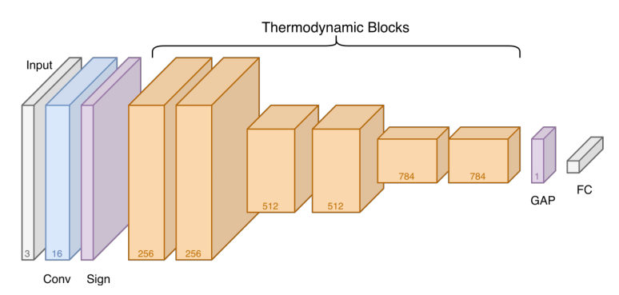
<figcaption class="paper-figure-caption"><b>Fig 1.</b> Figure 1: Our CIFAR-10 classifier. The encoder is a single classical convolution with sign activation. This is followed by six thermodynamic blocks. The classical decoder is a global average pool followed by a fully- connected linear map to the output layer. Each thermodynamic block contains three convolutional layers, as depicted in Figure 2.</figcaption>
</figure>
<figure class="paper-figure-card">
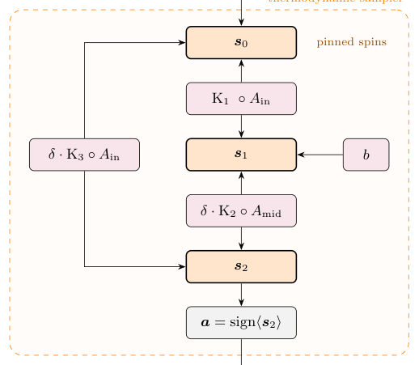
<figcaption class="paper-figure-caption"><b>Fig 2.</b> Figure 2: Architecture of a single thermodynamic block, implemented as an Ising system. It contains three layers of spins: input spins s0, hidden spins s1, and output spins s2. The input layer s0 is pinned in place. They are connected by bidirectional linear couplings, depicted in purple boxes. Couplings in an Ising system are bidirectional, but the labels indicate the forward coupling, i.e. moving downward in the diagram. The reverse couplings are the linear adjoint; for the exact relationship, see Equation (5). The hidden layer is also affected by the local magnetic fields b. Finally, an average-and-sign circuit a accumulates time-averages of s2 and outputs their signs.</figcaption>
</figure>
<figure class="paper-figure-card">
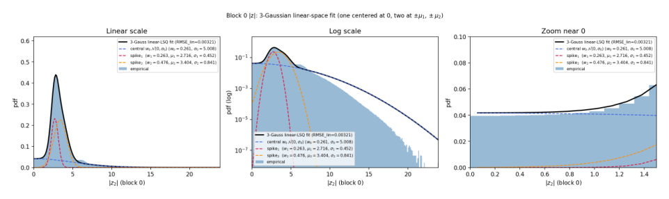
<figcaption class="paper-figure-caption"><b>Fig 3.</b> Figure 3: Empirical |z| distribution and 3-component Gaussian mixture fit for the first block of our CIFAR- 10 model.</figcaption>
</figure>
<figure class="paper-figure-card">

<figcaption class="paper-figure-caption"><b>Fig 4.</b> Figure 4: Measured stochastic error rate compared against numerically evaluated integral for the first block of our CIFAR-10 model. The fit is very close, but the integral does not capture the period-two oscillation caused by the chromatic Gibbs sampling.</figcaption>
</figure>
<figure class="paper-figure-card">
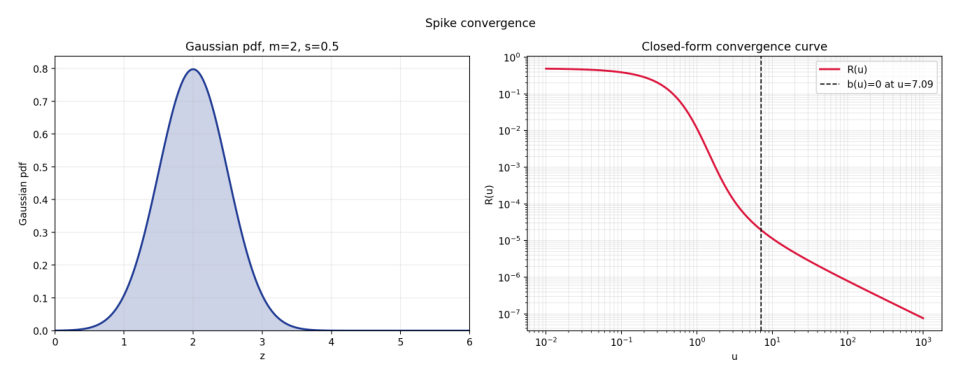
<figcaption class="paper-figure-caption"><b>Fig 5.</b> Figure 5: Theoretical convergence rate for a single Gaussian spike away from z = 0, with time of transition to power-law convergence visualized.</figcaption>
</figure>
</div>

<p><strong>Summary.</strong> The paper presents a novel framework to train deep neural networks for inference on Ising machine hardware by treating the network as a sequence of thermodynamic blocks. It introduces 'Gibbs regularization' within a backpropagation scheme, allowing high accuracy while keeping computational cost manageable through careful control of sampling parameters.</p>
<p><strong>Why it may be interesting.</strong> This work bridges statistical mechanics (Ising models, Gibbs sampling) directly into practical AI engineering, providing a concrete roadmap for realizing energy-efficient neuromorphic computing using principles from non-equilibrium statistical physics.</p>
<details>
<summary>Detailed structure</summary>
<p><strong>Main problem.</strong> Developing scalable methods for training large Artificial Intelligence (AI) models to run inference on low-power thermodynamic computing hardware based on the Ising model.</p>
<p><strong>Main result.</strong> The authors developed a purely backpropagation-based algorithm using Gibbs regularization that successfully trains deep convolutional networks, achieving high accuracy while demonstrating that inference cost is bounded by a controllable tradeoff with performance.</p>
<p><strong>Method.</strong> Training involves a multi-phase process combining standard loss functions (CE) with specialized fixed-point and magnitude regularizers to stabilize the network weights for operation within stochastic Ising dynamics. Inference relies on time-averaging output spins via Gibbs sampling.</p>
<p><strong>Model / system.</strong> The system is based on deep convolutional networks implemented as sequential 'thermodynamic blocks' operating on an Ising model Hamiltonian. The core computation uses high-temperature Gibbs sampling rather than ground-state annealing.</p>
<p><strong>Key observables.</strong> Accuracy (e.g., 94.9% on CIFAR-10), Inference Cost, Integrated Autocorrelation Time ($ au_{    ext{int}}$), and the percentage of FLOPs offloaded to Ising hardware.</p>
<p><strong>Important parameters / regimes.</strong> Temperature gradient parameter ($\delta$), total number of sweeps ($G$), and various loss weighting parameters ($\alpha, \lambda_{	ext{FP}}, \lambda_{	ext{mag}}$).</p>
<p><strong>Assumptions / limitations.</strong> The approach assumes that the time-averaged behavior of high-temperature Gibbs-sampled Ising systems can accurately emulate feed-forward neural inference. The theoretical analysis relies on linearizing dynamics around mean-field approximations.</p>
<p><strong>Figures summary.</strong> Figures illustrate the overall classifier structure (Encoder $ o$ Blocks $ o$ Decoder) and detail the internal architecture of a single thermodynamic block as an Ising system with input, hidden, and output spins.</p>
<p><strong>Paper structure.</strong> The paper progresses from establishing the theoretical correspondence between neural networks and Ising systems to developing the scalable backpropagation training algorithm via Gibbs regularization. It then analyzes error sources (related to $G$ and $\delta$) and concludes by discussing hardware implications for convolutional topologies.</p>
</details>
<details>
<summary>Abstract</summary>
<p>Thermodynamic computing devices based on the Ising model show great promise for low-power AI inference and edge computing, but scalable methods for training large models for such hardware remain limited. Prior theory shows that the time-averaged behavior of high-temperature Gibbs-sampled Ising systems can implement feed-forward neural inference. We turn this theoretical correspondence into a scalable and purely backpropagation-based algorithm for training deep convolutional networks for thermodynamic inference on Ising machine hardware. Our image classification models achieve accuracies of 94.9% on CIFAR-10 and 76.0% on CIFAR-100 under binary Gibbs sampling. We then develop and experimentally validate a mathematical theory relating inference cost to accuracy and controlling autocorrelation times. Subsequently, we calculate asymptotic results showing that inference cost is bounded by a well-controlled tradeoff with performance and exhibit algorithms for computing optimal inference schedules. Finally, we discuss implications for hardware development and the future of high-temperature thermodynamic AI models.</p>
</details>
<p><sub><a href="#top">↑ back to top</a></sub></p>

<p><a id="paper-2607.00467"></a></p>
<h3 id="single-cell-level-distributions-and-relationships-can-differentiate-cell-division-and-growth-models"><a href="http://arxiv.org/abs/2607.00467v1">Single-cell-level distributions and relationships can differentiate cell-division and growth models</a></h3>
<p><strong>Authors:</strong> Vikas, Rahul Marathe, Anjan Roy<br>
<strong>Type:</strong> theory · <strong>Category:</strong> statistical mechanics · <strong>PDF:</strong> <a href="https://arxiv.org/pdf/2607.00467v1">https://arxiv.org/pdf/2607.00467v1</a><br>
<strong>Analysis basis:</strong> full PDF text, analyzed in chunks
<strong>Topic relevance:</strong> <code>methods for driven-dissipative</code> <strong>3/5</strong> · <code>non-equilibrium dynamics</code> <strong>3/5</strong> · <code>non-equilibrium universality</code> <strong>2/5</strong> · <code>Keldysh / 2PI / non-Gaussian methods</code> <strong>1/5</strong> · <code>driven-dissipative phase transition</code> <strong>1/5</strong></p>
<div class="figure-strip-hint">↔ Scroll figures horizontally</div>
<div class="paper-figures-scroll">
<figure class="paper-figure-card">

<figcaption class="paper-figure-caption"><b>Fig 1.</b> FIG. 1. Artistic representations of various cell-division models: Timer, Sizer, and Adder. The insets represent the graphs of birth-size of a random cell (versus time) tracked for many generations that follows a particular cell-division model under exponential growth, with stochasticity in the rule of cell-division, growth rate, and partitioning fraction. Here, for simplicity, the distributions for the free parameters are taken to be Gaussian. The mean division-time is taken to be 1 hour for the Timer model, mean division-size is taken to be 2µm for the Sizer model, and mean division-added-size is taken to be 1µm for the Adder model. Mean exponential growth rate is taken to be ln(2) per...</figcaption>
</figure>
<figure class="paper-figure-card">
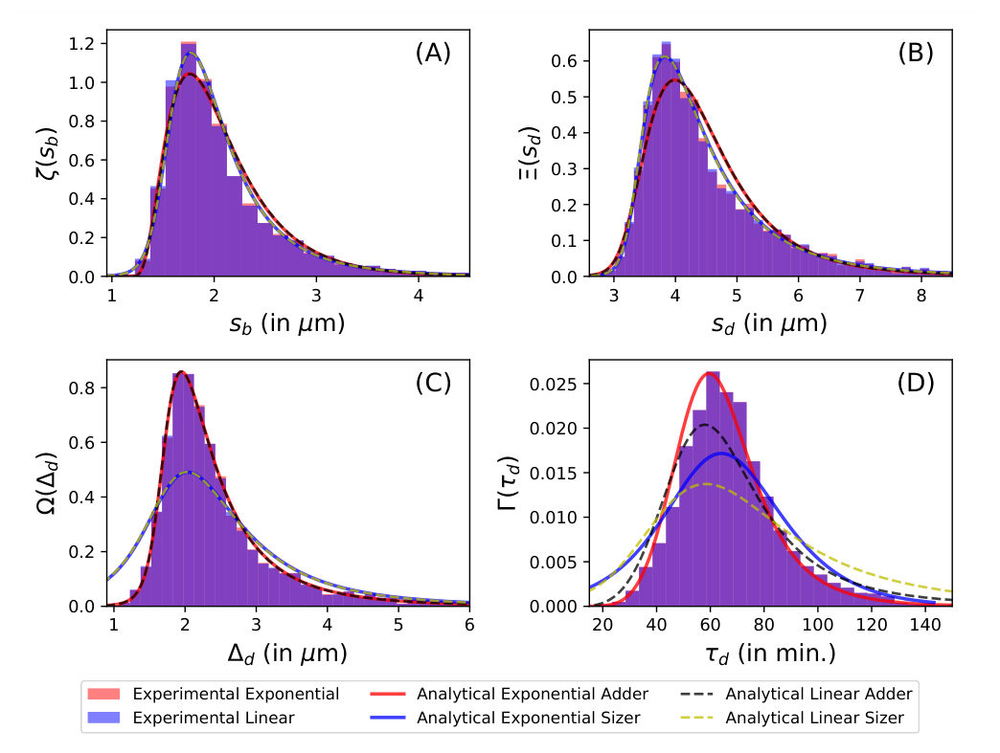
<figcaption class="paper-figure-caption"><b>Fig 2.</b> FIG. 2. Various experimental single-cell-level distributions (obtained from the single-cell experimental data for E. coli (25◦C) [46]) compared with their analytical results – (A) Birth-size distribution, (B) Division-size distribution, (C) Division-added- size distribution, and (D) Division-time distribution, assuming a specific cell-division model (Sizer or Adder) and specific single-cell growth paradigm (linear or exponential). The three free-parameter distributions, namely the principal distribution (Ξ(sd) for the Sizer and Ω(∆d) for the Adder model), growth-rate distribution Λ(α), and partitioning-fraction distribution κ(β), are taken as Johnson SU fits to the corresponding...</figcaption>
</figure>
<figure class="paper-figure-card">

<figcaption class="paper-figure-caption"><b>Fig 3.</b> FIG. 3. Mean, standard deviation, and coefficient of variation (the ratio of standard deviation and mean) for various single-cell quantities plotted against each other – (A) mean birth-size versus mean division-size, (B) standard deviation of birth-size versus standard deviation of division-size, (C) mean division-added-size versus mean division-size, (D) standard deviation of division-added-size versus standard deviation of division-size, (E) mean division-time versus mean exponential growth rate, (F) coefficient of variation of division-time versus coefficient of variation of division-size. The data have been taken from previous studies [19, 20, 24, 46]. For Tanouchi et al. [46], the data...</figcaption>
</figure>
<figure class="paper-figure-card">

<figcaption class="paper-figure-caption"><b>Fig 4.</b> FIG. 4. Various single-cell quantities, such as τd, sd, and ∆d, plotted against sb to infer correlations of these quantities with birth-size. The experimental data have been taken from a previous study [46] for E. coli at different temperatures – 25◦C, 27◦C, and 37◦C. In the first row, τd is plotted against sb; in the second row, sd is plotted against sb; and in the third row, ∆d is plotted against sb. The first column represents these correlations at 25◦C, the second column represents the correlations at 27◦C, and the third column represents the correlations at 37◦C. The dashed line in the scatter plot represents the linear fit to the data. The insets in all of these plots compare ‘Pearson...</figcaption>
</figure>
</div>

<p><strong>Summary.</strong> This work uses single-cell measurements of bacterial growth and division (like size and time) to mathematically distinguish between competing theoretical models governing cell biology. By analyzing the full statistical relationships—including variances and correlations—the authors show that these quantitative tools can pinpoint whether a species follows an Adder, Sizer, or Timer mechanism, and whether its growth is linear or exponential.</p>
<p><strong>Why it may be interesting.</strong> While the subject is biology, the methodology relies heavily on advanced statistical mechanics tools—deriving moment equations, analyzing non-equilibrium steady states, and using probability distributions to constrain underlying physical rules. This mathematical rigor connecting microscopic processes to macroscopic statistics is relevant.</p>
<details>
<summary>Detailed structure</summary>
<p><strong>Main problem.</strong> The study aims to differentiate between various underlying cell-division (e.g., Timer, Sizer, Adder) and single-cell growth paradigms (linear vs. exponential) in microbial cells.</p>
<p><strong>Main result.</strong> Analysis of statistical relationships, particularly those involving standard deviations ($\sigma$) and correlations, can successfully distinguish between the different division models and growth types.</p>
<p><strong>Method.</strong> The authors derive analytical probability distributions and statistical moments (means, variances, covariances) for single-cell quantities based on assumed model parameters. These theoretical predictions are then compared against experimental data.</p>
<p><strong>Model / system.</strong> The system is bacterial cell growth and division dynamics in culture. Models include Timer, Sizer, and Adder division rules, coupled with linear or exponential single-cell growth kinetics.</p>
<p><strong>Key observables.</strong> Single-cell quantities: birth-size ($s_b$), division-size ($s_d$), division-time ($    au_d$), and division-added-size ($\Delta d$). Statistical measures include means, standard deviations, and Pearson Correlation Coefficients (P.C.C.).</p>
<p><strong>Important parameters / regimes.</strong> Model parameters defining the distributions of size/time additions ($\Xi(s_d)$, $\Omega(\Delta d)$), growth rate distribution ($\Lambda(\alpha)$), and partitioning fraction ($\kappa(eta)$).</p>
<p><strong>Assumptions / limitations.</strong> Key assumptions include assuming independence between certain model parameters (e.g., growth rate $\alpha$ independent of size-related quantities) and using approximations like Taylor series expansions or 'sharply spiked' distributions.</p>
<p><strong>Figures summary.</strong> Figures compare experimental single-cell distributions and correlation coefficients against analytical predictions for various combinations of division/growth models, with the Adder model showing better agreement in several instances.</p>
<p><strong>Paper structure.</strong> The paper progresses by first establishing that correlations are useful, then demonstrating that probability distributions alone suffice. It systematically derives theoretical relationships for means, variances, and cross-correlations ($\langle \cdot 
angle$ vs $\sigma^2$, etc.) for different model combinations before comparing these to experimental data.</p>
</details>
<details>
<summary>Abstract</summary>
<p>Complex interactions among regulatory molecules determine the rules underlying cell growth and division in microbial cells. While the governing molecular network may not always be obvious, it is well known that correlations among certain physiological quantities measured in experiments, such as birth-size, division-size, division-time, and division-added-size, can differentiate among various cell-division models, such as Timer, Sizer, and Adder. Here we show that, apart from these correlations, which we extend for the case of stochastic single-cell growth and stochastic asymmetric partitioning, probability distributions of these quantities and statistical relationships between them can also be used to differentiate between these division models. Interestingly, we show that these quantities can not only differentiate the division models, but also distinguish among the single-cell growth paradigms, such as linear and exponential growth. We then demonstrate this differentiability among various division and growth models by comparing our analytical results with published experimental data. We further show that these results remain valid even when the growth rate of a cell is correlated with the growth rate of cells from previous generations in the lineage.</p>
</details>
<p><sub><a href="#top">↑ back to top</a></sub></p>

<p><a id="paper-2607.01076"></a></p>
<h3 id="universal-short-imaginary-time-quantum-critical-dynamics-near-boundaries"><a href="http://arxiv.org/abs/2607.01076v1">Universal Short-Imaginary-Time Quantum Critical Dynamics Near Boundaries</a></h3>
<p><strong>Authors:</strong> Yu-Rong Shu, Yuan-Biao Li, Shuai Yin<br>
<strong>Type:</strong> theory · <strong>Category:</strong> statistical mechanics · <strong>PDF:</strong> <a href="https://arxiv.org/pdf/2607.01076v1">https://arxiv.org/pdf/2607.01076v1</a><br>
<strong>Analysis basis:</strong> full PDF text, analyzed in chunks
<strong>Topic relevance:</strong> <code>non-equilibrium universality</code> <strong>3/5</strong> · <code>non-equilibrium dynamics</code> <strong>2/5</strong> · <code>Keldysh / 2PI / non-Gaussian methods</code> <strong>1/5</strong> · <code>analog quantum simulation</code> <strong>1/5</strong> · <code>correlated / nonlocal dissipation</code> <strong>1/5</strong> · <code>driven-dissipative phase transition</code> <strong>1/5</strong> · <code>methods for driven-dissipative</code> <strong>1/5</strong></p>
<div class="figure-strip-hint">↔ Scroll figures horizontally</div>
<div class="paper-figures-scroll">
<figure class="paper-figure-card">
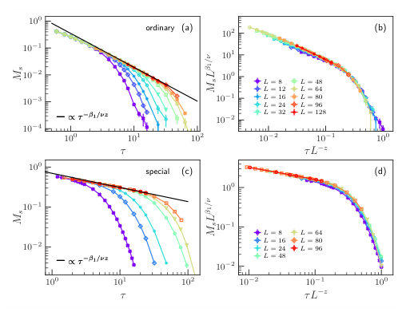
<figcaption class="paper-figure-caption"><b>Fig 1.</b> FIG. 1. Dynamics of the boundary order parameter 𝑀𝑠from the ordered initial state. (a) and (b): Evolution of 𝑀before and after rescaling for the ordinary transition. (c) and (d): Evolution of 𝑀be- fore and after rescaling for the special transition. The solid lines indi- cate power-law decay with the exponent 𝛽1/𝜈𝑧= 1.2704 and 0.3535 for the ordinary and special transition, respectively. Log-log scale is used in all plots.</figcaption>
</figure>
<figure class="paper-figure-card">

<figcaption class="paper-figure-caption"><b>Fig 2.</b> FIG. 2. Dynamics of the transverse correlation 𝐶⊥from the dis- ordered initial state. (a): Dependence of 𝐶⊥on 𝐿/𝜏1/𝑧for the ordi- nary transition with 𝜂⊥= 1.7887. (b): Finite-size rescaling collapse of the data in (a). (c): Same as (a), but for the special transition, 𝜂⊥= 0.8718. (d): Finite-size rescaling collapse of the data in (c). Semi-log scale is used in (a), (c), while (b), (d) use log-log scale. The straight lines in (a) and (c) indicate exponential dependence.</figcaption>
</figure>
<figure class="paper-figure-card">
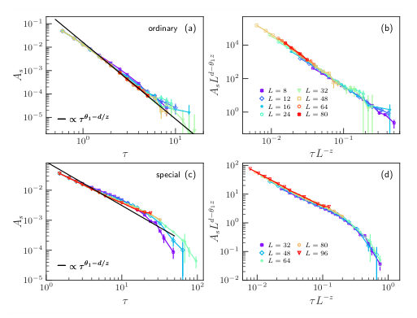
<figcaption class="paper-figure-caption"><b>Fig 3.</b> FIG. 4. Dynamics of the boundary autocorrelation 𝐴𝑠from the disordered initial state. (a): Imaginary-time evolution of 𝐴𝑠for the ordinary transition. (b): Finite-size rescaling collapse of the data in (a). (c): Same as (a), but for the special transition. (d): Finite-size rescaling collapse of the data in (c). The solid lines indicate power- law decay with the exponent 𝜃1 −𝑑/𝑧, with 𝜃1 = −1.295 and 0.539 for the ordinary and special transition, respectively. Log-log scale is used in all plots.</figcaption>
</figure>
<figure class="paper-figure-card">
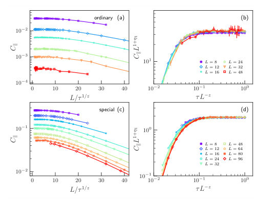
<figcaption class="paper-figure-caption"><b>Fig 4.</b> FIG. 3. Dynamics of the longitudinal correlation 𝐶∥near the boundary from the disordered initial state. (a): Dependence of 𝐶∥ on 𝐿/𝜏1/𝑧for the ordinary transition with 𝜂∥= 2.5408. (b): Finite- size rescaling collapse of the data in (a). (c): Same as (a), but for the special transition 𝜂∥= 0.7070. (d): Finite-size rescaling collapse of the data in (c). Semi-log scale is used in (a), (c), while (b), (d) use log-log scale. The straight lines in (a) and (c) indicate exponential dependence.</figcaption>
</figure>
</div>

<p><strong>Summary.</strong> This paper develops a scaling theory to characterize how quantum critical dynamics near physical boundaries differ from bulk behavior. Using the 2D quantum Ising model, the authors derive distinct power-law decay exponents ($  heta_1,     heta'_1$) for boundary correlations depending on the specific boundary universality class. This work offers new insights into boundary criticality and its implications beyond standard quantum-classical mappings.</p>
<p><strong>Why it may be interesting.</strong> The findings provide a detailed, quantitative framework for understanding how spatial boundaries fundamentally alter the dynamics of quantum phase transitions, which is crucial for modeling confined or patterned quantum materials.</p>
<details>
<summary>Detailed structure</summary>
<p><strong>Main problem.</strong> The study investigates universal short-imaginary-time quantum critical dynamics occurring near boundaries, recognizing that boundary effects modify standard bulk critical scaling behaviors.</p>
<p><strong>Main result.</strong> The paper establishes distinct scaling laws for boundary order parameter decay and correlation functions depending on the boundary universality class (ordinary vs. special), showing that key exponents do not follow conventional quantum-classical mappings.</p>
<p><strong>Method.</strong> A universal scaling theory is developed, extending the Short-Distance Expansion (SDE) to analyze power-law decays of various correlation functions in imaginary time ($ au$).</p>
<p><strong>Model / system.</strong> The primary model studied is the two-dimensional (2D) quantum Ising model on a square lattice with mixed boundary conditions (periodic in one direction, open/boundary along another). The Hamiltonian includes transverse field and nearest-neighbor interactions.</p>
<p><strong>Key observables.</strong> Boundary order parameter ($M_s$), autocorrelation functions ($A_s$), and two-time correlation functions ($P_s, G_s$).</p>
<p><strong>Important parameters / regimes.</strong> The analysis distinguishes between 'ordinary' and 'special' boundary universality classes, characterized by different critical exponents ($eta_1$, $    heta_1$, $  heta'_1$).</p>
<p><strong>Assumptions / limitations.</strong> The work relies on developing and verifying scaling forms derived from extending the SDE to quantum short-imaginary-time dynamics.</p>
<p><strong>Figures summary.</strong> Figures illustrate data collapse for various correlation functions ($M, A, P, G$) in both bulk and boundary regimes, confirming predicted power-law scaling laws for different transition types.</p>
<p><strong>Paper structure.</strong> The paper develops a general scaling theory, applies it to the 2D quantum Ising model using QMC simulations, derives specific exponents ($ heta_1,     heta'_1$), and verifies these results by analyzing multiple correlation functions ($A, P, G$) across different boundary universality classes.</p>
</details>
<details>
<summary>Abstract</summary>
<p>While imaginary-time evolution has long served as a standard paradigm for ground-state preparation in numerical simulations and quantum devices, its intrinsic dynamical properties has been largely overlooked. Here, we investigate the short-imaginary-time critical dynamics in quantum systems with boundaries. A universal scaling theory is developed and verified in the two-dimensional quantum Ising model, uncovering rich dynamic critical behaviors dictated by boundary universality classes. For ordered initial states, the boundary order parameter $M_s$ decays with imaginary time $τ$ as $M_s \propto τ^{-β_1/νz}$, where $β_1$ denotes the boundary order parameter exponent, and $ν$ and $z$ correspond to the correlation length exponent and the dynamic exponent, respectively. For disordered initial states, the autocorrelation of the boundary order parameter is governed by a novel critical exponent $θ_1$, which is closely related to the critical initial slip behavior of $M_s$ characterized by the corresponding exponent $θ_1'$. In contrast to its positive bulk counterpart, the boundary initial-slip exponent $θ_1'$ is negative for the ordinary transition while remaining positive for the special transition. Although the static universality classes of $d$-dimensional quantum phase transitions generally coincide with those of $(d+1)$-dimensional classical phase transitions, we show that $θ_1$ does not follow this conventional quantum-classical mapping. We further discuss the implications of our results for more exotic forms of boundary criticality. Our findings provide new physical insights into boundary critical dynamics and offer a novel route for probing exotic boundary critical behaviors in quantum many-body systems.</p>
</details>
<p><sub><a href="#top">↑ back to top</a></sub></p>

<p><a id="paper-2607.00767"></a></p>
<h3 id="power-law-relaxation-of-non-gaussian-parameter-and-self-dynamic-structure-factor-in-multidimensional-rugged-energy-landscapes"><a href="http://arxiv.org/abs/2607.00767v1">Power-Law Relaxation of Non-Gaussian Parameter and Self-Dynamic Structure Factor in Multidimensional Rugged Energy Landscapes</a></h3>
<p><strong>Authors:</strong> Bimman Bagchi<br>
<strong>Type:</strong> theory · <strong>Category:</strong> statistical mechanics · <strong>PDF:</strong> <a href="https://arxiv.org/pdf/2607.00767v1">https://arxiv.org/pdf/2607.00767v1</a><br>
<strong>Analysis basis:</strong> full PDF text, analyzed in chunks
<strong>Topic relevance:</strong> <code>non-equilibrium dynamics</code> <strong>3/5</strong> · <code>non-equilibrium universality</code> <strong>2/5</strong> · <code>Keldysh / 2PI / non-Gaussian methods</code> <strong>1/5</strong> · <code>correlated / nonlocal dissipation</code> <strong>1/5</strong> · <code>driven-dissipative phase transition</code> <strong>1/5</strong> · <code>methods for driven-dissipative</code> <strong>1/5</strong></p>
<div class="figure-strip-hint">↔ Scroll figures horizontally</div>
<div class="paper-figures-scroll">
<figure class="paper-figure-card">
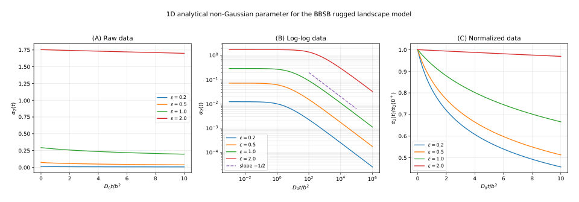
<figcaption class="paper-figure-caption"><b>Fig 1.</b> Figure 1: One-dimensional analytical prediction for the non-Gaussian parameter α2(t) in the uncorrelated BBSB rugged landscape model. [14] The dimensionless time is D0t/b2, and the ruggedness values are ϵ = 0.2, 0.5, 1.0, 2.0. (A) Raw α2(t) on ordinary axes. (B) Raw α2(t) on log–log axes, showing comparison with the asymptotic one-dimensional t−1/2 decay. (C) Normalized non-Gaussian parameter α2(t)/α2(0+), emphasizing the relaxation of mobility memory.</figcaption>
</figure>
</div>

<p><strong>Summary.</strong> This theoretical work develops a rigorous framework to study diffusion on rugged energy landscapes by analyzing the time evolution of higher moments, particularly the non-Gaussian parameter. It establishes that this relaxation exhibits distinct power-law scaling depending on dimensionality ($d$), providing a sensitive diagnostic tool beyond simple effective diffusion coefficients.</p>
<p><strong>Why it may be interesting.</strong> The explicit derivation of dimension-dependent power laws for non-Gaussian relaxation, going beyond simple mean-square displacement analysis, provides a powerful diagnostic tool for characterizing disorder effects in complex systems relevant to quantum dynamics and transport.</p>
<details>
<summary>Detailed structure</summary>
<p><strong>Main problem.</strong> The research aims to characterize finite-time diffusion dynamics, specifically focusing on the power-law relaxation of non-Gaussian parameters ($\alpha_2(t)$) and the self-dynamic structure factor in multidimensional rugged energy landscapes.</p>
<p><strong>Main result.</strong> The paper predicts dimension-dependent power-law decays for $\alpha_2(t)$: $t^{-1/2}$ in 1D, $(\ln t)/t$ in 2D, and $t^{-1}$ for $d>2$, which serve as distinct signatures of mobility heterogeneity.</p>
<p><strong>Method.</strong> The theoretical framework uses a propagator-based approach derived from the master equation, relating higher moments (like $\alpha_2(t)$) to the time correlation of the local diffusivity field via a mobility-memory approximation.</p>
<p><strong>Model / system.</strong> The system is tagged-particle diffusion on a multidimensional lattice with quenched disorder, where hopping rates are governed by site energies following the Miller–Abrahams rule. The landscape is modeled as correlated quenched Gaussian random fields.</p>
<p><strong>Key observables.</strong> Non-Gaussian parameter ($\alpha_2(t)$), Self-dynamic structure factor ($F_s(\mathbf{k}, t)$), Apparent diffusion coefficient ($D_{	ext{app}}(t)$).</p>
<p><strong>Important parameters / regimes.</strong> Dimensionality ($d$), Ruggedness amplitude ($\epsilon$), Spatial correlation length ($\xi$), Initial preparation parameter ($eta_0$).</p>
<p><strong>Assumptions / limitations.</strong> The analysis relies on the existence of a homogenized diffusive regime for long-time limits and uses approximations relating $\alpha_2(t)$ to the variance of the time-integrated local mobility.</p>
<p><strong>Figures summary.</strong> Figures illustrate analytical predictions showing the characteristic power-law decay of $\alpha_2(	au)$ in 1D, confirming the $t^{-1/2}$ dependence based on raw data and log-log plots.</p>
<p><strong>Paper structure.</strong> The paper builds from a general propagator formulation to derive specific results for low dimensions (e.g., 1D benchmark) before establishing the universal dimensional hierarchy ($d=1 	o t^{-1/2}$, $d=2 	o (\ln t)/t$, $d>2 	o t^{-1}$) by analyzing the self-dynamic structure factor's small-$k$ expansion.</p>
</details>
<details>
<summary>Abstract</summary>
<p>Ruggedness of the underlying energy landscape gives rise to heterogeneous mobility and non-Gaussian diffusion. We develop a theoretical framework for tagged-particle diffusion in multidimensional rugged energy landscapes modeled as correlated quenched Gaussian random fields. Using the self-propagator and self-dynamic structure factor, we characterize finite-time diffusion beyond the effective diffusion coefficient. We determine the effects of dimensionality, spatial correlations, and initial preparation. By introducing a coarse-grained mobility field and a mobility-memory approximation, we relate the non-Gaussian parameter to the time correlation of the mobility sampled by the particle. In the homogenized diffusive regime, the mobility correlation decays algebraically, leading to long-time relaxation of the non-Gaussian parameter as $t^{-1/2}$ in one dimension, $(\ln t)/t$ in two dimensions, and $t^{-1}$ for $d>2$, with amplitudes that depend on dimensionality and the initial ensemble. Our results show that rugged energy landscapes leave distinct signatures in the effective diffusion coefficient, self-dynamic structure factor, and relaxation of non-Gaussian fluctuations.</p>
</details>
<p><sub><a href="#top">↑ back to top</a></sub></p>
<hr>
<p>
<a href="index.html">← Index</a>
 · <a href="papers_02.html">← Previous</a> · <a href="papers_04.html">Next →</a>
</p>
<hr>

</body>
</html>
